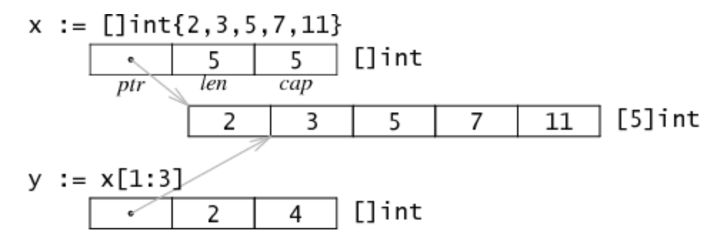
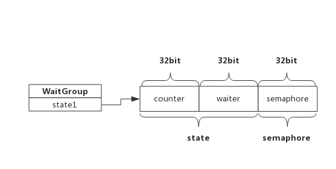

Golang Note
Modules and Packages
不論是 module 或 package，都可以在本地匯入，不一定要發到遠端 repository。
# 在 hello 資料夾中
$ go mod init example.com/user/hello # 宣告 module_path，通常會和該 repository 的 url 位置一致
$ go install . # 編譯該 module 並將執行檔放到 GOBIN，因此在 GOBIN 資料夾中會出現 hello 的執行檔
$ go mod tidy # 移除沒用到的套件
$ go clean -modcache # 移除所有下載第三方套件的內容
💡 安裝到 GOBIN 資料夾的檔案名稱，會是在 go.mod /案中第一行定義 module path 中路徑的最後一個。因此若 module_path 是 example.com/user/hello 則在 GOBIN 中的檔名會是 hello；若 module_path 是 example/user 則在 GOBIN 資料夾中的檔名會是 user。
若我們在 go module 中有使用其他的遠端（第三方）套件，當執行 go install、go build 或 go run 時，go 會自動下載該 remote module，並記錄在 go.mod 檔案中。這些遠端套件會自動下載到 $GOPATH/pkg/mod 的資料夾中。當有不同的 module 之間需要使用相同版本的第三方套件時，會共用這些下載的內容，因此這些內容會是「唯讀」。若想要刪除這些第三方套件的內容，可以輸入 go clean -modcache。
設定 GOPATH
# ~/.zshrc
export GOPATH=$HOME/go
export PATH=$PATH:$GOPATH/bin
Packages
-
Go 的程式碼都是以
package的方式在組織，一個 package 就是在同一資料夾中的許多 GO 檔案。 -
同一個 package 的所有 Go 檔案會放在同一個資料夾內；而這個資料夾內的所有檔案也都會屬於同一個 package，有相同的 package 名稱。
-
如果套件是在 module 中，go import package 的路徑會是
module path加上subdirectory。 -
通常 package 的名稱會跟著 folder 的名稱，舉例來說，若檔案放在
math/rand資料夾中，則該套件會稱作rand。 -
package scope
：
- 在 Go 語言中，並沒有區分
public、private或protected，而是根據變數名稱的第一個字母大小寫來判斷能否被外部引用。 - 在同一個 package 中變數、函式、常數和 type，都隸屬於同一個 package scope，因此雖然可能在不同支檔案內，但只要隸屬於同一個 package，都可以使用（visible）。
- 如果需要讓 package 內的變數或函式等能夠在 package 外部被使用，則該變數的第一個字母要大寫才能讓外部引用（Exported names），否則的話會無法使用
- 在 Go 語言中，並沒有區分
-
有兩種不同類型的 package：
- executable package：是用來產生我們可以執行的檔案，一定會包含
package main並且帶有名為main的函式，只有這個檔案可以被執行（run）和編譯（build），並且不能被其他檔案給匯入。 - reusable package(library package)：類似 "helpers" 或常稱作 library / dependency，目的是可以放入可重複使用的程式邏輯，它是不能被直接執行的，可以使用任何的名稱。
- executable package：是用來產生我們可以執行的檔案，一定會包含
在 Go 裡面要區別這兩種 Package 的主要方式就是利用「package 名稱」，當使用 main 當做 package 名稱時，就會被當作 executable package，因此接著執行 go build <fileName> 時，會產生一支執行檔；但是當使用 main 以外的名稱是，都會被當作是 reusable package，因此當使用 go build 指令時，不會產生任何檔案。
要匯入 reusable package 只需要：
// 匯入單一個 package
import "fmt"
// 匯入多個 packages（不用逗號）
import (
"fmt"
"strings"
)
// go-hello-world/main.go
package main
import (
"fmt"
// 把 foo 這個 package 的方法都放到這隻檔案中，如此不用使用 foo.HelloWorld（不建議）
. "go-hello-world/foo"
// 將模組轉換為別名，可以使用 bar.HelloWorld
bar "go-hello-world/foo"
// 沒有用到這個 package，但要 init 它
_ "go-hello-world/foo"
)
func main() {
fmt.Println(bar.HelloWorld())
fmt.Println("Hello main")
}
// go-hello-world/foo/helloworld.go
package foo
import "fmt"
func init() {
fmt.Println("This is init of helloworld")
}
// HelloWorld ...
func HelloWorld() string {
return "Hello World"
}
package name: coding style and convention
- 👍 package name @ golang blog
- package name @ effective go
- package name @ golang wiki > code review comments
在 Go 中，package 的名稱應該是短而清楚，以小寫（lower case）命名，同時不包含底線（under_scores）或小寫駝峰（mixedCaps），並且通常會是名詞（noun），例如 time、list、或 http。
在幫 package 命名的時候，試想自己就是使用該 pkg 的開發者，用這種角度來替自己的 pkg 命名。
另外，由於使用者在匯入該 package，假設引入的 使用時，一定會需要使用該 package 的 name 作為前綴，因此在 package 中的變數名稱盡可能不要和 package name 重複：
-
在
httppackage 中如果要使用 Server，不需要使用http.HTTPServer，而是可以直接使用http.Server -
當在
uuid
的 package 要產生一組
uuid.UUID
時，不需要使用
uuid.NewUUID()
的方法，而是可以直接使用
uuid.New()
，也就是說如果回傳的型別名稱（
UUID
）和該 pkg 的名稱相同時，可以直接將該方法命名成
New
，而不用是
NewOOO
-
time.Now()會回傳time.Time -
如果 pkg 會回傳的 struct 名稱不同於 package 本身的名稱時，則可以使用
NewOOO
time.NewTicker()uuid.NewRandom()
💡 雖然 pkg 中 variable name 的前綴會盡量不和 package name 重複，但很常見的情況是在該 pkg 中有其同名的 struct，例如 time pkg 中有名為
Time的 struct，因此型別會是time.Time，
不好的用法：
- 盡可能不要使用
util,common,misc這類的名稱作為 package name，因為這對使用者來說是沒有意義的名字，而是去想使用者這如果要用這些方法的話，最有可能使用到的關鍵字是什麼。 - 見範例「Break up generic packages」
go tool 找 package 的邏輯
go tool 會使用 $GOPATH 來找對應的 package，假設引入的 package 路徑是 "github.com/user/hello"，那麼 go tool 就會去找 $GOPATH/src/github.com/user/hello。
Modules
# 初始化 Go Module
$ export GO111MODULE=on # 在 GOPATH 外要使用 module 需要啟動
# go mod init [module_path]
$ go mod init example.com/user/hello # 宣告 module path
$ go mod tidy # 移除沒用到的 library
$ go mod download # 下載套件（go build 和 go test 也會自動下載）
$ go get [library] # 新增或更新 package 到 Module 內
$ go get -u ./... # 等同於，go get -u=patch ./...
$ go get foo@master. # 下載特定版本的 go package
$ go list -m all # 印出 module 正在使用的所有套件
$ go list -m -versions [package] # 列出所有此套件可下載的版本
$ go list -u -m all # 檢視有無任何 minor 或 patch 的更新
- Modules @ Golang Wiki
- Using Go Modules @ golang blog
- 在一個專案中通常只會有一個 module（但也可以有多個），並且放在專案的根目錄，module 裡面會集合所有相關聯的 Go packages。在
go.mod中會宣告module path，這是用來匯入所有在此 module 中的路徑的前綴（path prefix），同時它也讓 go 的工具知道要去哪裡下載它。 - 透過 Modules 可以準確紀錄相依的套件，讓程式能再次被編譯。
- 總結來說：
- 一個 repository 會包含一個或以上的 Go modules
- 每個 module 會包含一個或以上的 Go packages
- 每個 package 會包含一個或以上的檔案在單一資料夾中
- 在執行
go build或go test時，會根據 imports 的內容自動添加套件，並更新go.mod。 - 當需要的時候，可以直接在
go.mod指定特定的版本，或使用go get，例如go get foo@v1.2.3,go get foo@master,go get foo@e3702bed2
go.mod
在 root directory 中會透過 go.mod 來定義 Module，而 Module 的原始碼可以放在 GOPATH 外，有四種指令 module, require, replace, exclude 可以使用：
// go.mod
// go.mod
module github.com/my/thing
require (
github.com/some/dependency v1.2.3
github.com/another/dependency/v4 v4.0.0
)
module
用來宣告 Module 的身份，並帶入 module 的路徑。在這個 module 中所有匯入的路徑都會以這個 module path 當作前綴（prefix）。透過 module 的路徑，以及 go.mod 到 package's 資料夾的相對路徑，會共同決定 import package's 時要使用的路徑。
replace and execute
這兩個命令都只能用在當前模組（即， main），否則將會在編譯時被忽略。
其他
- 階層關係上：Module > Package > Directory
跨檔案引用函式
從下面的例子中可以看到，雖然 main.go 裡面有一個函式是定義在 state.go 的檔案中，但因為它們屬於同一個 package，所以當從 Terminal 執行 go run main.go state.go 時，程式可以正確執行。
或者也可以輸入 go run *.go：
// main.go
package main
func main() {
printState()
}
// state.go
package main
import "fmt"
func printState() {
fmt.Println("California")
}
套件載入的流程
在 golang 中，使用某一個套件時，go 會先去 GOROOT 找看看是不是內建的函式庫，如果找不到的話，會去 GOPATH 內找，如果都找不到的話，就無法使用。
變數宣告（variables）
Go 屬於強型別（Static Types）的語言，其中常見的基本型別包含 bool, string, int, float64, map。
第一種宣告方式（最常用）：short declaration
使用 := 宣告，表示之前沒有進行宣告過。這是在 go 中最常使用的變數宣告的方式，因為它很簡潔。但因為在 package scope 的變數都是以 keyword 作為開頭，因此不能使用縮寫的方式定義變數（foo := bar），只能在 function 中使用，具有區域性（local variable）：
// 第一種宣告方式
function main() {
foo := "Hello"
bar := 100
// 也可以簡寫成
foo, bar := "Hello", 100
}
// 等同於
function main() {
var foo string
foo = "Hello"
}
第二種宣告方式：variable declaration
使用時機主要是：
- 當你不知道變數的起始值
- 需要在 package scope 宣告變數
- 當為了程式的閱讀性，將變數組織在一起時
⚠️ 留意：在 package scope 宣告的變數會一直保存在記憶體中，直到程式結束才被釋放，因此應該減少在 package scopes 宣告變數
// 第二種宣告方式，在 main 外面宣告（全域變數），並在 main 內賦值
var foo string
var bar int
// 可以簡寫成
var (
foo string
bar int
)
function main() {
foo = "Hello"
bar = 100
}
不建議把變數宣告在全域環境
如果變數型別一樣的話，也可以簡寫成這樣：
func main() {
var c, python, java bool
fmt.Println(c, python, java)
}
第三種宣告方式
直接宣告並賦值：
// 第三種宣告方式，直接賦值
var (
foo string = "Hello"
bar int = 100
)
三種方式是一樣的
下面這兩種寫法是完全一樣的：
var <name> <type> = <value>
var <name> := <value>
// var card string = "Ace of Spades"
card := "Ace of Spades"
// var pi float = 3.14
pi := 3.14
只有在宣告變數的時候可以使用 := 的寫法，如果要重新賦值的話只需要使用 =。
注意事項
錯誤：重複宣告變數
// 錯誤：重複宣告變數
paperColor := "Green"
paperColor := "Blue"
正確：我們可以在 main 函式外宣告變數，但無法在 main 函式外賦值
// 正確：我們可以在 main 函式外宣告變數，但無法在 main 函式外賦值
package main
import "fmt"
var deckSize int
func main() {
deckSize = 50
fmt.Println(deckSize)
}
錯誤：無法在 main 函式外賦值
// 錯誤：但無法在 main 函式外賦值
package main
import "fmt"
// syntax error: non-declaration statement outside function body
deckSize := 20
func main() {
fmt.Println(deckSize)
}
錯誤：變數需要先宣告完才能使用
// 錯誤：變數需要先宣告完才能使用
package main
import "fmt"
func main() {
deckSize = 52 // undefined: deckSize
fmt.Println(deckSize) // undefined: deckSize
}
常數（constant）
keywords: iota
使用 := 或 var 所宣告的會是變數，若需要宣告常數，需要使用 const：
const (
Monday = 1
Tuesday = 2
Wednesday = 3
// ...
)
// 可以簡寫成
// iota 預設從 0 開始，後面的變數自動加一
const (
Monday = iota + 1
Tuesday
Wednesday
// ...
)
Go 語言裡面定義變數有多種方式。
使用 var 關鍵字是 Go 最基本的定義變數方式，與 C 語言不同的是 Go 把變數型別放在變數名後面：
//定義一個名稱為“variableName”，型別為"type"的變數
var variableName type
定義變數並初始化值
//初始化“variableName”的變數為“value”值，型別是“type”
var variableName type = value
同時初始化多個變數
/*
定義三個型別都是"type"的變數，並且分別初始化為相應的值
vname1 為 v1，vname2 為 v2，vname3 為 v3
*/
var vname1, vname2, vname3 type= v1, v2, v3
你是不是覺得上面這樣的定義有點繁瑣？沒關係，因為 Go 語言的設計者也發現了，有一種寫法可以讓它變得簡單一點。我們可以直接忽略型別宣告，那麼上面的程式碼變成這樣了：
/*
定義三個變數，它們分別初始化為相應的值
vname1 為 v1，vname2 為 v2，vname3 為 v3
然後 Go 會根據其相應值的型別來幫你初始化它們
*/
var vname1, vname2, vname3 = v1, v2, v3
現在是不是看上去非常簡潔了？:=這個符號直接取代了 var 和type，這種形式叫做簡短宣告。不過它有一個限制，那就是它只能用在函式內部；在函式外部使用則會無法編譯透過，所以一般用 var 方式來定義全域性變數。
/*
定義三個變數，它們分別初始化為相應的值
vname1 為 v1，vname2 為 v2，vname3 為 v3
編譯器會根據初始化的值自動推匯出相應的型別
*/
vname1, vname2, vname3 := v1, v2, v3
常數
所謂常數，也就是在程式編譯階段就確定下來的值，而程式在執行時無法改變該值。在 Go 程式中，常數可定義為數值、布林值或字串等型別。
const constantName = value
//如果需要，也可以明確指定常數的型別：
const Pi float32 = 3.1415926
下面是一些常數宣告的例子：
const Pi = 3.1415926
const i = 10000
const MaxThread = 10
const prefix = "astaxie_"
Go 常數和一般程式語言不同的是，可以指定相當多的小數位數(例如 200 位)， 若指定給 float32 自動縮短為 32bit，指定給 float64 自動縮短為 64bit，詳情參考 連結
數值型別
整數型別有無符號和帶符號兩種。Go 同時支援 int 和uint，這兩種型別的長度相同，但具體長度取決於不同編譯器的實現。Go 裡面也有直接定義好位數的型別：rune, int8, int16, int32, int64和byte, uint8, uint16, uint32, uint64。其中 rune 是int32的別稱，byte是 uint8 的別稱。
需要注意的一點是，這些型別的變數之間不允許互相賦值或操作，不然會在編譯時引起編譯器報錯。
如下的程式碼會產生錯誤：invalid operation: a + b (mismatched types int8 and int32)
var a int8
var b int32
c:=a + b
另外，儘管 int 的長度是 32 bit, 但 int 與 int32 並不可以互用。
浮點數的型別有 float32 和float64兩種（沒有 float 型別），預設是float64。
這就是全部嗎？No！Go 還支援複數。它的預設型別是complex128（64 位實數+64 位虛數）。如果需要小一些的，也有complex64(32 位實數+32 位虛數)。複數的形式為RE + IMi，其中 RE 是實數部分，IM是虛數部分，而最後的 i 是虛數單位。下面是一個使用複數的例子：
var c complex64 = 5+5i
//output: (5+5i)
fmt.Printf("Value is: %v", c)
字串
我們在上一節中講過，Go 中的字串都是採用UTF-8字符集編碼。字串是用一對雙引號（""）或反引號（` ）括起來定義，它的型別是string`。
實際在 Go 中，字串是由唯讀的 UTF-8 編碼位元組所組成。
//範例程式碼
var frenchHello string // 宣告變數為字串的一般方法
var emptyString string = "" // 宣告了一個字串變數，初始化為空字串
func test() {
no, yes, maybe := "no", "yes", "maybe" // 簡短宣告，同時宣告多個變數
japaneseHello := "Konichiwa" // 同上
frenchHello = "Bonjour" // 常規賦值
}
在 Go 中字串是不可變的，例如下面的程式碼編譯時會報錯：cannot assign to s[0]
var s string = "hello"
s[0] = 'c'
但如果真的想要修改怎麼辦呢？下面的程式碼可以實現：
s := "hello"
c := []byte(s) // 將字串 s 轉換為 []byte 型別
c[0] = 'c'
s2 := string(c) // 再轉換回 string 型別
fmt.Printf("%s\n", s2)
Go 中可以使用+運算子來連線兩個字串：
s := "hello,"
m := " world"
a := s + m
fmt.Printf("%s\n", a)
修改字串也可寫為：
s := "hello"
s = "c" + s[1:] // 字串雖不能更改，但可進行切片(slice)操作
fmt.Printf("%s\n", s)
如果要宣告一個多行的字串怎麼辦？可以透過`` `來宣告：
m := `hello
world`
`` ` 括起的字串為 Raw 字串，即字串在程式碼中的形式就是列印時的形式，它沒有字元轉義，換行也將原樣輸出。例如本例中會輸出：
hello
world
錯誤型別
Go 內建有一個 error 型別，專門用來處理錯誤資訊，Go 的 package 裡面還專門有一個套件 errors 來處理錯誤：
err := errors.New("emit macho dwarf: elf header corrupted")
if err != nil {
fmt.Print(err)
}
映射 Map
map有很多種翻譯，名詞叫作地圖，動詞有映射、對應、對照的意思 ，在一些程式語言中則有Key-Value一個關鍵字對應一個值的用法。
var Variable = map[Type]Type{}
var a = map[int]string{}
可以像這樣bool對應到任何string
var Male = map[bool]string{
true: "公",
false: "母",
}
或是設定string對應到int
var Number = map[string]int{
"零": 0,
"壹": 1,
"貳": 2,
}
Number["參"] = 3
string對應到string也可以，
var Size = map[string]string{
"big": "大",
"medium": "中",
"small": "小",
}
只要任兩種型態設定好、對應好之後就能用哩，
string的前後要加雙引號" "，來試試效果吧！
取map
fmt.Print(Male[true],Number["參"])
/* result:
公3
*/
【for 迭代遍歷】
透過for range關鍵字，遍歷造訪結構內的每個元素
for key, value := range Size {
fmt.Println(key, value)
}
/* result:
big 大
medium 中
small 小
*/
結構 Struct
【struct】
結構裡面可以放多個變數（int、string、slice、map等等）、物件、甚至是結構。
宣告結構Struct的幾種方式：
package main
import "fmt"
type Res struct {
Status string `json:"status"`
Msg string `json:"msg"`
}
func main() {
res1 := new(Res)
var res2 = new(Res)
var res3 *Res
res4 := &Res{
Status: "failed",
}
fmt.Println(res1, res2, res3, res4)
fmt.Printf("%+v %+v %+v %+v",res1, res2, res3, res4)
}
/* result:
&{ } &{ } <nil> &{failed }
&{Status: Msg:} &{Status: Msg:} <nil> &{Status:failed Msg:}
*/
【Nested Structure】巢狀結構
結構中的結構的結構、大腸包小腸再包小小腸
type Wallet struct {
Blue1000 int // 藍色小朋友
Red100 int // 紅色國父
Card string
}
type PencilBox struct {
Pencil string
Pen string
}
type Bag struct {
Wallet // 直接放入結構就好
PencilBox // 直接放入結構就好
Books string
}
type Person struct {
Bag
Name string
}
func main() {
var bag = Bag{
Wallet{Card: "世華泰國信用無底洞卡", Red100: 5},
PencilBox{Pen: "Cross", Pencil: "Pentel"},
"Go繁不及備載", // Books
}
var Tommy = Person{}
Tommy.Name = "Tommy"
Tommy.Bag = bag
fmt.Printf("%+v", Tommy)
}
/* result:
{Bag:{Wallet:{Blue1000:0 Red100:5 Card:世華泰國信用無底洞卡} PencilBox:{Pencil:Pentel Pen:Cross} Books:Go繁不及備載} Name:Tommy}
*/
【指標、結構、位址】
這裡將上面的例子取一部分出來修改，
如果將main()裡的var Bag敘述改成 &Bag：
type Person struct {
Bag // 放Bag這個物件
Name string
}
func main() {
var bag = &Bag{
Wallet{Card: "世華泰國信用無底洞卡", Red100: 5},
PencilBox{Pen: "Cross", Pencil: "Pentel"},
"Go繁不及備載",
}
var Tommy = Person{}
Tommy.Name = "Tommy"
Tommy.Bag = *bag // 透過`取值`來取出bag位址裡面的東西
fmt.Printf("%+v", Tommy)
}
/* result:
{Bag:{Wallet:{Blue1000:0 Red100:5 Card:世華泰國信用無底洞卡} PencilBox:{Pencil:Pentel Pen:Cross} Books:Go繁不及備載} Name:Tommy}
*/
印出bag 就要透過*來取值
如果將Person裡的Bag改成 *Bag：
type Person struct {
*Bag // 放指標
Name string
}
func main() {
var bag = &Bag{ // 指到位址
Wallet{Card: "世華泰國信用無底洞卡", Red100: 5},
PencilBox{Pen: "Cross", Pencil: "Pentel"},
"Go繁不及備載",
}
var Tommy = Person{}
Tommy.Name = "Tommy"
Tommy.Bag = bag // 這裡就印出bag位址
fmt.Printf("%+v", Tommy)
}
/* result:
{Bag:0xc000048050 Name:Tommy}
*/
這樣子就會印出bag的位址
雖然有點違反物理法則及常識，但
【小坑】如果Bag裡面有PencilBox，PencilBox裡面又有Bag
會怎麼樣呢？
答案是出現 invalid recursive type 的錯誤。
https://play.golang.org/p/KS5IvIgF1BQ
type PencilBox struct {
Pencil string
Pen string
Bag // 你中有我 我中有你
}
type Bag struct {
Wallet
PencilBox
Books string
}
雖然放物件會出現錯誤，但是 放指針不會
https://play.golang.org/p/mXbp60WDXtR
type PencilBox struct {
Pencil string
Pen string
*Bag // 你中有針
}
type Bag struct {
Wallet
PencilBox
Books string
}
func main() {
var bag = Bag{
Wallet{Card: "世華泰國信用無底洞卡", Red100: 5},
PencilBox{Pen: "Cross", Pencil: "Pentel"},
"Go繁不及備載",
}
bag.PencilBox.Bag = &bag // 包包裡放針
fmt.Printf("%+v", *bag.PencilBox.Bag)
}
/* result:
{Wallet:{Blue1000:0 Red100:5 Card:世華泰國信用無底洞卡} PencilBox:{Pencil:Pentel Pen:Cross Bag:0xc000046060} Books:Go繁不及備載}
*/
基於結構定義新型態
你可以使用 type 基於 struct 來定義新型態，例如：
package main
import "fmt"
type Point struct {
X, Y int
}
func main() {
point1 := Point{10, 20}
fmt.Println(point1) // {10 20}
point2 := Point{Y: 20, X: 30}
fmt.Println(point2) // {30 20}
}
在上面基於結構定義了新型態 Point，留意到名稱開頭的大小寫，若是大寫的話，就可以在其他套件中存取，這點對於結構的值域也是成立，大寫名稱的值域，才可以在其他套件中存取。在範例中也可以看到，建立並指定結構的值域時，可以直接指定值域名稱，而不一定要按照定義時的順序。
名稱相同的方法
Go 語言中不允許方法重載（Overload），因此，對於以下的程式，是會發生 String 重複宣告的編譯錯誤：
package main
import "fmt"
type Account struct {
id string
name string
balance float64
}
func String(account *Account) string {
return fmt.Sprintf("Account{%s %s %.2f}",
account.id, account.name, account.balance)
}
type Point struct {
x, y int
}
func String(point *Point) string { // String redeclared in this block 的編譯錯誤
return fmt.Sprintf("Point{%d %d}", point.x, point.y)
}
func main() {
account := &Account{"1234-5678", "Justin Lin", 1000}
point := &Point{10, 20}
fmt.Println(account.String())
fmt.Println(point.String())
}
然而，若是將函式定義為方法，就不會有這個問題，Go 可以從方法的接收者辨別，該使用哪個 String 方法：
package main
import "fmt"
type Account struct {
id string
name string
balance float64
}
func (ac *Account) String() string {
return fmt.Sprintf("Account{%s %s %.2f}",
ac.id, ac.name, ac.balance)
}
type Point struct {
x, y int
}
func (p *Point) String() string {
return fmt.Sprintf("Point{%d %d}", p.x, p.y)
}
func main() {
account := &Account{"1234-5678", "Justin Lin", 1000}
point := &Point{10, 20}
fmt.Println(account.String()) // Account{1234-5678 Justin Lin 1000.00}
fmt.Println(point.String()) // Point{10 20}
}
- 使用 new syntax：第二種和第三種寫法是一樣的
var user1 *Person // nil
user2 := &Person{} // {}，user2.firstName 會是 ""
user3 := new(Person) // {}，user3.firstName 會是 ""
// STEP 1：建立一個 person 型別，它本質上是 struct
type Person struct {
firstName string
lastName string
}
// 等同於
type Person struct {
firstName, lastName string
}
有幾種不同的方式可以根據 struct 來建立變數的：
func main() {
// 方法一：根據資料輸入的順序決定誰是 firstName 和 lastName
alex := Person{"Alex", "Anderson"}
// 直接取得 struct 的 pointer
alex := &Person{"Alex", "Anderson"}
// 方法二（建議）
alex := Person{
firstName: "Alex",
lastName: "Anderson",
}
// 方法三：先宣告再賦值
var alex Person
alex.firstName = "Alex"
alex.lastName = "Anderson"
}
定義匿名的 struct（anonymous struct）
也可以不先宣告 struct 直接建立個 struct：
foo := struct {
Hello string
}{
Hello: "World",
}
當 pointer 指稱到的是 struct 時
當 pointer 指稱到的是 struct 時，可以直接使用這個 pointer 來對該 struct 進行設值和取值。在 golang 中可以直接使用 pointer 來修改 struct 中的欄位。一般來說，若想要透過 struct pointer（&v）來修改該 struct 中的屬性，需要先解出其值（*p）後使用 (*p).X = 10，但這樣做太麻煩了，因此在 golang 中允許開發者直接使用 p.X 的方式來修改：
type Person struct {
name string
age int32
}
func main() {
p := &Person{
name: "Aaron",
}
// golang 中允許開發者直接使用 `p.age` 的方式來設值與取值
p.age = 10 // 原本應該要寫 (*p).X = 10
fmt.Printf("%+v", p) // {name:Aaron age:10}
另外，使用 struct pointer 時才可以修改到原本的物件，否則會複製一個新的：
func main() {
r1 := rectangle{"Green"}
// 複製新的，指稱到不同位置
r2 := r1
r2.color = "Pink"
fmt.Println(r2) // Pink
fmt.Println(r1) // Green
// 指稱到相同位置
r3 := &r1
r3.color = "Red"
fmt.Println(r3) // Red
fmt.Println(r1) // Red
}
建立類別 (Class) 和物件 (Object)
建立物件 (Object)
package main /* 1 */
import ( /* 2 */
"log" /* 3 */
) /* 4 */
// `X` and `Y` are public fields. /* 5 */
type Point struct { /* 6 */
X float64 /* 7 */
Y float64 /* 8 */
} /* 9 */
// Use an ordinary function as constructor /* 10 */
func NewPoint(x float64, y float64) *Point { /* 11 */
p := new(Point) /* 12 */
p.X = x /* 13 */
p.Y = y /* 14 */
return p /* 15 */
} /* 16 */
func main() { /* 17 */
p := NewPoint(3, 4) /* 18 */
if !(p.X == 3.0) { /* 19 */
log.Fatal("Wrong value") /* 20 */
} /* 21 */
if !(p.Y == 4.0) { /* 22 */
log.Fatal("Wrong value") /* 23 */
} /* 24 */
}
第 6 行至第 9 行的部分是形態宣告。Golang 沿用結構體為類別的型態，而沒有用新的保留字。
第 11 行至第 16 行的部分是建構函式。在一些程式語言中，會有為了建立物件使用特定的建構子 (constructor)，而 Golang 沒有引入額外的新語法，直接以一般的函式充當建構函式來建立物件即可。
第 17 行至第 25 行為外部程式。在我們的 Point 物件 p 中，我們直接存取 p 的屬性 X 和 Y，這在物件導向上不是好的習慣，因為我們無法控管屬性，物件可能會產生預期外的行為，比較好的方法，是將屬性隱藏在物件內部，由公開方法去存取。我們在後文中會討論。
類別宣告不限定於結構體
雖然大部分的 Golang 類別都使用結構體，但其實 Golang 類別內部可用其他的型別，如下例：
type Vector []float64 /* 1 */
func NewVector(args ...float64) Vector { /* 2 */
return args /* 3 */
} /* 4 */
func WithSize(s int) Vector { /* 5 */
v := make([]float64, s) /* 6 */
return v /* 7 */
}
在第 1 行中，我們宣告 Vector 型態，該型態內部不是使用結構體，而是使用陣列。
我們在第 2 行至第 4 行間及第 5 行至第 8 間宣告了兩個建構函式。由此例可知，Go 不限定建構函式的數量，我們可以視需求使用多個不同的建構函式。
撰寫方法 (Method)
在物件導向程式中，我們很少直接操作屬性 (field)，通常會將屬性私有化，再加入相對應的公開方法 (method)。我們將先前的 Point 物件改寫如下：
package main /* 1 */
import ( /* 2 */
"log" /* 3 */
) /* 4 */
// `x` and `y` are private fields. /* 5 */
type Point struct { /* 6 */
x float64 /* 7 */
y float64 /* 8 */
} /* 9 */
func NewPoint(x float64, y float64) *Point { /* 10 */
p := new(Point) /* 11 */
p.SetX(x) /* 12 */
p.SetY(y) /* 13 */
return p /* 14 */
} /* 15 */
// The getter of x /* 16 */
func (p *Point) X() float64 { /* 17 */
return p.x /* 18 */
} /* 19 */
// The getter of y /* 20 */
func (p *Point) Y() float64 { /* 21 */
return p.y /* 22 */
} /* 23 */
// The setter of x /* 24 */
func (p *Point) SetX(x float64) { /* 25 */
p.x = x /* 26 */
} /* 27 */
// The setter of y /* 28 */
func (p *Point) SetY(y float64) { /* 29 */
p.y = y /* 30 */
} /* 31 */
func main() { /* 32 */
p := NewPoint(0, 0) /* 33 */
if !(p.X() == 0) { /* 34 */
log.Fatal("Wrong value") /* 35 */
} /* 36 */
if !(p.Y() == 0) { /* 37 */
log.Fatal("Wrong value") /* 38 */
} /* 39 */
p.SetX(3) /* 40 */
p.SetY(4) /* 41 */
if !(p.X() == 3.0) { /* 42 */
log.Fatal("Wrong value") /* 43 */
} /* 44 */
if !(p.Y() == 4.0) { /* 45 */
log.Fatal("Wrong value") /* 46 */
} /* 47 */
}
第 6 行至第 9 行是類別宣告的部分。在這個版本的宣告中，我們將 x 和 y 改為小寫，代表該屬性是私有屬性，其可視度僅限於同一 package 中。
第 10 行至第 15 行是 Point 類別的建構函式。請注意我們刻意在第 12 行及第 13 行用該類別的 setters 來初始化屬性，這是刻意的動作。因為我們要確保在設置屬性時的行為保持一致。
第 16 行至第 31 行是 Point 類別的 getters 和 setters。所謂的 getters 和 setters 是用來存取內部屬性的 method。比起直接暴露屬性，使用 getters 和 setters 會有比較好的控制權。日後要修改 getters 或 setters 的實作時，也只要修改同一個地方即可。
在本例中，getters 和 setters 都是公開 method。但 getters 或 setters 不一定必為公開 method。例如，我們想做唯讀的 Point 物件時，就可以把 setters 的部分設為私有 method，留給類別內部使用。
在 Go 語言中，沒有 this 或 self 這種代表物件的關鍵字，而是由程式設計者自訂代表物件的變數，在本例中，我們用 p 表示物件本身。透過這種帶有物件的函式宣告後，函式會和物件連動；在物件導向中，將這種和物件連動的函式稱為方法 (method)。
雖然在這個例子中，暫時無法直接看出使用方法的好處，比起直接操作屬性，透過私有屬性搭配公開方法帶來許多的益處。例如，如果我們希望 Point 在建立之後是唯讀的，我們只要將 SetX 和 SetY 改為私有方法即可。或者，我們希望限定 Point 所在的範圍為 0.0 至 1000.0，我們可以在 SetX 和 SetY 中檢查參數是否符合我們的要求。
靜態方法 (Static Method)
有些讀者學過 Java 或 C#，可能有聽過過靜態方法 (static method)。這是因為 Java 和 C# 直接將物件導向的概念融入其語法中，然而，為了要讓某些方法在不建立物件時即可使用，所使用的一種補償性的語法機制。由於 Go 語言沒有將物件導向的概念直接加在語法中，不需要用這種語法，直接用頂層函式即可。
例如：我們撰寫一個計算兩點間長度的函式：
package main /* 1 */
import ( /* 2 */
"log" /* 3 */
"math" /* 4 */
) /* 5 */
type Point struct { /* 6 */
x float64 /* 7 */
y float64 /* 8 */
} /* 9 */
func NewPoint(x float64, y float64) *Point { /* 10 */
p := new(Point) /* 11 */
p.SetX(x) /* 12 */
p.SetY(y) /* 13 */
return p /* 14 */
} /* 15 */
func (p *Point) X() float64 { /* 16 */
return p.x /* 17 */
} /* 18 */
func (p *Point) Y() float64 { /* 19 */
return p.y /* 20 */
} /* 21 */
func (p *Point) SetX(x float64) { /* 22 */
p.x = x /* 23 */
} /* 24 */
func (p *Point) SetY(y float64) { /* 25 */
p.y = y /* 26 */
} /* 27 */
// Use an ordinary function as static method. /* 28 */
func Dist(p1 *Point, p2 *Point) float64 { /* 29 */
xSqr := math.Pow(p1.X()-p2.X(), 2) /* 30 */
ySqr := math.Pow(p1.Y()-p2.Y(), 2) /* 31 */
return math.Sqrt(xSqr + ySqr) /* 32 */
} /* 33 */
func main() { /* 34 */
p1 := NewPoint(0, 0) /* 35 */
p2 := NewPoint(3.0, 4.0) /* 36 */
if !(Dist(p1, p2) == 5.0) { /* 37 */
log.Fatal("Wrong value") /* 38 */
} /* 39 */
}
本範例和前一節的範例大同小異。主要的差別在於第 29 行至第 33 間多了一個用來計算距離的函式。該函式不綁定特定的物件，相當於 Java 的靜態函式。
因為 Golang 不是 Java 這種純物件導向語言，而是混合命令式和物件式兩種語法，所以不需要使用特定的語法來實踐靜態函式，使用一般的函式即可。
或許有讀者會擔心，使用過多的頂層函式會造成全域空間的汙染和衝突；實際上不需擔心，雖然我們目前將物件和主程式寫在一起，實務上，物件會寫在獨立的package 中，藉由 package 即可大幅減低命名空間衝突的議題。
使用嵌入 (Embedding) 取代繼承 (Inheritance)
繼承 (inheritance) 是一種重用程式碼的方式，透過從父類別 (parent class) 繼承程式碼，子類別 (child class) 可以少寫一些程式碼。此外，對於靜態型別語言來說，繼承也是實現多型 (polymorphism) 的方式。然而，Go 語言卻刻意地拿掉繼承，這是出自於其他語言的經驗。
繼承雖然好用，但也引起許多的問題。像是 C++ 相對自由，可以直接使用多重繼承，但這項特性會引來菱型繼承 (diamond inheritance) 的議題，Java 和 C# 刻意把這個機制去掉，改以介面 (interface) 進行有限制的多重繼承。從過往經驗可知過度地使用繼承，會增加程式碼的複雜度，使得專案難以維護。出自於工程上的考量，Go 捨去繼承這個語法特性。
為了補償沒有繼承的缺失，Go 加入了嵌入 (embedding) 這個新的語法特性，透過嵌入，也可以達到程式碼共享的功能。
例如，我們擴展 Point 類別至三維空間：
package main /* 1 */
import ( /* 2 */
"log" /* 3 */
) /* 4 */
type Point struct { /* 5 */
x float64 /* 6 */
y float64 /* 7 */
} /* 8 */
func NewPoint(x float64, y float64) *Point { /* 9 */
p := new(Point) /* 10 */
p.SetX(x) /* 11 */
p.SetY(y) /* 12 */
return p /* 13 */
} /* 14 */
func (p *Point) X() float64 { /* 15 */
return p.x /* 16 */
} /* 17 */
func (p *Point) Y() float64 { /* 18 */
return p.y /* 19 */
} /* 20 */
func (p *Point) SetX(x float64) { /* 21 */
p.x = x /* 22 */
} /* 23 */
func (p *Point) SetY(y float64) { /* 24 */
p.y = y /* 25 */
} /* 26 */
type Point3D struct { /* 27 */
// Point is embedded /* 28 */
Point /* 29 */
z float64 /* 30 */
} /* 31 */
func NewPoint3D(x float64, y float64, z float64) *Point3D { /* 32 */
p := new(Point3D) /* 33 */
p.SetX(x) /* 34 */
p.SetY(y) /* 35 */
p.SetZ(z) /* 36 */
return p /* 37 */
} /* 38 */
func (p *Point3D) Z() float64 { /* 39 */
return p.z /* 40 */
} /* 41 */
func (p *Point3D) SetZ(z float64) { /* 42 */
p.z = z /* 43 */
} /* 44 */
func main() { /* 45 */
p := NewPoint3D(1, 2, 3) /* 46 */
// GetX method is from Point /* 47 */
if !(p.X() == 1) { /* 48 */
log.Fatal("Wrong value") /* 49 */
} /* 50 */
// GetY method is from Point /* 51 */
if !(p.Y() == 2) { /* 52 */
log.Fatal("Wrong value") /* 53 */
} /* 54 */
// GetZ method is from Point3D /* 55 */
if !(p.Z() == 3) { /* 56 */
log.Fatal("Wrong value") /* 57 */
} /* 58 */
}
第 5 行至第 26 行是原本的 Point 類別，這和先前的實作是雷同的，不多做說明。
第 27 行至第 44 行是 Point3D 類別，我們來看一下這個類別。
第 27 行至第 31 行是 Point3D 的類別宣告。請注意我們在第 29 行嵌入了 Point 類別。
第 32 行至第 38 行是 Point3d 的建構函式。雖然我們沒有為 Point3D 宣告 SetX() 及 SetY() method，但我們有嵌入 Point 類別，所以我們在第 34 行及第 35 行可以直接使用這些 method。
第 45 行至第 59 行是外部程式的部分。由於我們的 Point3D 內嵌了 Point，雖然 Point3D 沒有自己實作 X() 和 Y() method，我們在第 48 行及第 52 行可直接呼叫這些 method。
在本例中，我們重用了 Point 的方法，再加入 Point3D 特有的方法。實際上的效果等同於繼承。
然而，Point 和 Point3D 兩者在類別關係上卻是不相干的獨立物件。在以下例子中，我們想將 Point3D 加入 Point 物件組成的切片，而引發程式的錯誤：
// Declare Point and Point3D as above.
func main() {
points := make([]*Point, 0)
p1 := NewPoint(3, 4)
p2 := NewPoint3D(1, 2, 3)
// Error!
points = append(points, p1, p2)
}
在 Go 語言中，需要使用介面 (interface) 來解決這個議題，這就是我們下一篇文章所要探討的主題。
嵌入指標
除了嵌入其他結構外，結構也可以嵌入指標。我們將上例改寫如下：
package main
import (
"log"
)
type Point struct {
x float64
y float64
}
func NewPoint(x float64, y float64) *Point {
p := new(Point)
p.SetX(x)
p.SetY(y)
return p
}
func (p *Point) X() float64 {
return p.x
}
func (p *Point) Y() float64 {
return p.y
}
func (p *Point) SetX(x float64) {
p.x = x
}
func (p *Point) SetY(y float64) {
p.y = y
}
type Point3D struct {
// Point is embedded as a pointer
*Point
z float64
}
func NewPoint3D(x float64, y float64, z float64) *Point3D {
p := new(Point3D)
// Forward promotion
p.Point = NewPoint(x, y)
// Forward promotion
p.Point.SetX(x)
p.Point.SetY(y)
p.SetZ(z)
return p
}
func (p *Point3D) Z() float64 {
return p.z
}
func (p *Point3D) SetZ(z float64) {
p.z = z
}
func main() {
p := NewPoint3D(1, 2, 3)
// GetX method is from Point
if !(p.X() == 1) {
log.Fatal("Wrong value")
}
// GetY method is from Point
if !(p.Y() == 2) {
log.Fatal("Wrong value")
}
// GetZ method is from Point3D
if !(p.Z() == 3) {
log.Fatal("Wrong value")
}
}
同樣地，仍然不能透過嵌入指楆讓型別直接互通，而需要透過介面 (interface)。
Array和Slice的區別
Array
Go語言中的Array即為資料的一種集合，需要在宣告時指定容量和初值，且一旦宣告就長度固定了，訪問時按照索引進行訪問。通過內建函式len可以獲取陣列中的元素個數。
陣列在初始化時必須指定大小和初值，不過Go語言為我們提供了一些更為靈活的方式進行初始化。例如：使用...來自動獲取長度；未指定值時，用0賦予初值；指定指定元素的初值等。下面給出一些陣列初始化的方式示例。
var arr [5]int //聲明瞭一個大小為5的陣列，預設初始化值為[0,0,0,0,0]
arr := [5]int{1} //宣告並初始化了一個大小為5的陣列的第一個元素，初始化後值為[1,0,0,0,0]
arr := [...]int{1,2,3} //通過...自動獲取陣列長度，根據初始化的值的數量將大小初始化為3，初始化後值為[1,2,3]
arr := [...]int{4:1} //指定序號為4的元素的值為1，通過...自動獲取長度為5，初始化後值為[0,0,0,0,1]
函式引數
Go語言陣列作為函式引數時，必須指定引數陣列的大小，且傳入的陣列大小必須與指定的大小一致，陣列為按值傳遞的，函式內對陣列的值的改變不影響初始陣列:
package main
import "fmt"
//PrintArray print the value of array
func PrintArray(arr [5]int) {
arr[0] = 5
fmt.Println(arr)
}
func main() {
a := [...]int{4:1}
PrintArray(a) // [5,0,0,0,1]
fmt.Println(a) // [0,0,0,0,1]
}
Slice
切片是Go語言中極為重要的一種資料型別，可以理解為動態長度的陣列（雖然實際上Slice結構內包含了一個數組），訪問時可以按照陣列的方式訪問，也可以通過切片操作訪問。Slice有三個屬性：指標、長度和容量。指標即Slice名，指向的為陣列中第一個可以由Slice訪問的元素；長度指當前slice中的元素個數，不能超過slice的容量；容量為slice能包含的最大元素數量，但實際上當容量不足時，會自動擴充為原來的兩倍。通過內建函式len和cap可以獲取slice的長度和容量。
Slice在初始化時需要初始化指標，長度和容量，容量未指定時將自動初始化為長度的大小。可以通過直接獲取陣列的引用、獲取陣列/slice的切片構建或是make函式初始化陣列。下面給出一些slice初始化的方式示例。
s := []int{1,2,3} //通過陣列的引用初始化，值為[1,2,3],長度和容量為3
arr := [5]int{1,2,3,4,5}
s := arr[0:3] //通過陣列的切片初始化，值為[1,2,3]，長度為3，容量為5
s := make([]int, 3) //通過make函式初始化，值為[0,0,0]，長度和容量為3
s := make([]int, 3, 5) //通過make函式初始化，值為[0,0,0]，長度為3，容量為5
其中特別需要注意的是通過切片方式初始化。若是通過對slice的切片進行初始化，實際上初始化之後的結構如下圖所示：

此時x的值為[2,3,5,7,11]，y的值為[3,5,7]，且兩個slice的指標指向的是同一個陣列，也即x中的元素的值的改變將會導致y中的值也一起改變。
這樣的初始化方式可能會導致記憶體被過度佔用*，如只需要使用一個極大的陣列中的幾個元素，但是由於需要指向整個陣列，所以整個陣列在GC時都無法被釋放，一直佔用記憶體空間。故使用切片操作進行初始化時，最好使用
append函式將切片出來的資料複製到一個新的slice中，從而避免記憶體佔用陷阱。*
函式引數
Go語言Slice作為函式引數傳遞時為按引用傳遞的，函式內對slice內元素的修改將導致函式外的值也發生改變，不過由於傳入函式的是一個指標的副本，所以對該指標的修改不會導致原來的指標的變化（例如append函式不會改變原來的slice的值）。具體可以根據下面的程式碼進行理解：
package main
import "fmt"
//PrintSlice print the value of slice
func PrintSlice(s []int) {
s = append(s, 4)
s[0] = -1
fmt.Println(s)
}
func main() {
s := []int{1,2,3,4,5}
s1 := s[0:3]
fmt.Println("s:",s) //s: [1,2,3,4,5]
fmt.Println("s1:",s1) //s1: [1,2,3]
PrintSlice(s1) //[-1,2,3,4]
fmt.Println("s:",s) //[-1,2,3,4,5]
fmt.Println("s1:",s1) //[-1,2,3]
}
總結
- 陣列長度不能改變，初始化後長度就是固定的；切片的長度是不固定的，可以追加元素，在追加時可能使切片的容量增大。
- 結構不同，陣列是一串固定資料，切片描述的是擷取陣列的一部分資料，從概念上說是一個結構體。
- 初始化方式不同，如上。另外在宣告時的時候：宣告陣列時，方括號內寫明瞭陣列的長度或使用
...自動計算長度，而宣告slice時，方括號內沒有任何字元。 - unsafe.sizeof的取值不同，unsafe.sizeof(slice)返回的大小是切片的描述符，不管slice裡的元素有多少，返回的資料都是24位元組。unsafe.sizeof(arr)的值是在隨著arr的元素的個數的增加而增加，是陣列所儲存的資料記憶體的大小。
- 函式呼叫時的傳遞方式不同，陣列按值傳遞，slice按引用傳遞。
指標
Go 語言中有指標（Pointer），你可以在宣告變數時於型態前加上 *，這表示建立一個指標，例如：
var i *int
這時 i 是個空指標，也就是值為 nil，上頭等同於 var i *int = nil，目前並沒有儲存任何位址，如果想讓它儲存另一個變數的記憶體位址，可以使用 & 取得變數位址並指定給 i，例如：
package main
import "fmt"
func main() {
var i *int
j := 1
i = &j
fmt.Println(i) // 0x104382e0 之類的值
fmt.Println(*i) // 1
j = 10
fmt.Println(*i) // 10
*i = 20
fmt.Println(j) // 20
}
j 的位置儲存了 1，那麼具體來說，j 的位置到底是在哪？這就是 & 取址運算的目的，&j 具體取得了 j 的位置，然後指定給 i。
如上所示，如果想存取指標位址處的變數儲存的值，可以使用 *，因而，你改變 j 的值，*i 取得的就是改變後的值，透過 *i 改變值，從 j 取得的也會是改變後的值。
package main
import "fmt"
func add1To(n *int) {
*n = *n + 1
}
func main() {
number := 1
add1To(&number)
fmt.Println(number) // 2
}
打印型態
- 使用reflect的TypeOf方法
- 使用Printf中的 %T
package main
import (
"fmt"
"reflect"
)
func main() {
x := 10
p := &x
fmt.Printf("%T\n", p)
fmt.Println(reflect.TypeOf(p))
}
結構與指標
如果你建立了一個結構的實例，並將之指定給另一個結構變數，那麼會進行值域的複製。例如：
package main
import "fmt"
type Point struct {
X, Y int
}
func main() {
point1 := Point{X: 10, Y: 20}
point2 := point1
point1.X = 20
fmt.Println(point1) // {20, 20}
fmt.Println(point2) // {10 20}
}
這對於函式的參數傳遞也是一樣的：
package main
import "fmt"
type Point struct {
X, Y int
}
func changeX(point Point) {
point.X = 20
fmt.Println(point)
}
func main() {
point := Point{X: 10, Y: 20}
changeX(point) // {20 20}
fmt.Println(point) // {10 20}
}
point 的位置開始儲存了結構，可以對 point 使用 & 取值，將位址值指定給指標，因此若指定或傳遞結構時，不是想要複製值域，可以使用指標。例如：
package main
import "fmt"
type Point struct {
X, Y int
}
func main() {
point1 := Point{X: 10, Y: 20}
point2 := &point1
point1.X = 20
fmt.Println(point1) // {20, 20}
fmt.Println(point2) // &{20 20}
}
注意到 point2 := &point1 多了個 &，這取得了 point1 實例的指標值，並傳遞給 point2，point2 的型態是 *Point，也就是相當於 var point2 *Point = &point1，因此，當你透過 point1.X 改變了值，透過 point2 就能取得對應的改變。
類似地，也可以在傳遞參數給函式時使用指標：
package main
import "fmt"
type Point struct {
X, Y int
}
func changeX(point *Point) {
point.X = 20
fmt.Printf("&{%d %d}\n", point.X, point.Y)
}
func main() {
point := Point{X: 10, Y: 20}
changeX(&point) // &{20 20}
fmt.Println(point) // {20 20}
}
可以看到在 Go 語言中，即使是指標，也可以直接透過點運算子來存取值域，這是 Go 提供的語法糖，point.X 在編譯過後，會被轉換為 (*point).X。
你也可以透過 new 來建立結構實例，這會傳回結構實例的位址：
package main
import "fmt"
type Point struct {
X, Y int
}
func default_point() *Point {
point := new(Point)
point.X = 10
point.Y = 10
return point
}
func main() {
point := default_point()
fmt.Println(point) // &{10 10}
}
在這邊，point 是個指標，也就是 *Point 型態，儲存了結構實例的位址。
結構的值域也可以是指標型態，也可以是結構自身型態之指標，因此可實現鏈狀參考，例如：
package main
import "fmt"
type Point struct {
X, Y int
}
type Node struct {
point *Point
next *Node
}
func main() {
node := new(Node)
node.point = &Point{10, 20}
node.next = new(Node)
node.next.point = &Point{10, 30}
fmt.Println(node.point) // &{10 20}
fmt.Println(node.next.point) // &{10 30}
}
$T{} 的寫法與 new(T) 是等效的，使用 &Point{10, 20} 這類的寫法，可以同時指定結構的值域。
Json
go 的 json.Unmarshal 可以把 json 字串轉成 struct，而 json.Marshal 可以將 struct 轉成 json 字串．
package main
import (
"encoding/json"
"fmt"
)
type Person struct {
Id int `json:"id"`
Name string `json:name`
}
func main() {
data := []byte(`{"id" : 1 , "name" : "Daniel"}`)
var person Person
json.Unmarshal(data, &person)
fmt.Println(person)
jsondata, _ := json.Marshal(person)
fmt.Println(string(jsondata))
}
協程同步的三個方法
Mutex
互斥鎖，可以創建為其他結構體的字段；零值為解鎖 狀態，Mutex類型的鎖和線程無關，可以由不同的線程加鎖和解鎖。
Channel
使用Go語言的channel
WaitGroup
它能夠阻塞主線程的執行，直到所有的goroutine執行完畢。要注意goroutine的執行結果是亂序的，調度器無法保証goroutine執行順序，且進程結束時不會等待goroutine退出。
WaitGroup使用詳解
WaitGroup總共有三個方法：
- Add(delta int) : 計數器增加delta
- Done() : 計數器-1，相當於Add(-1)
- Wait() : 阻塞直到所有的WaitGroup數量變為零，即計數器變為0
sync.WaitGroup實現了一個類似Que的資料結構，我們可以不斷地向Que添加並發任務，每添加一個任務，就將計數器的值增加1，若我們啟動了 N 個並發任務時時，就需要把計數器增加 N 。每個任務完成時通過呼叫 Done()方法將計數器減1，並且從Que中刪除。如果隊例中的任務尚未執行完畢，我們通過調用 Wait() 來發出阻塞， 直到計數器歸零時，表示所有並發協程已經完成。
var wg sync.WaitGroup //宣告全域的WaitGroup
var count int32
func AddOne() { //定義函數，每次調用時count加1
defer wg.Done()
count++
}
func main() {
wg.Add(3) //往WaitGroup裡添加3個goroutine
go AddOne()
go AddOne()
go AddOne()
wg.Wait()
fmt.Printf("Count: %d", count ) //執行結束，輸出Count: 3
}
WaitGroup的特點是可以調用Wait()來阻塞隊列，直到隊列中的並發任務執行完畢才解除阻塞，不用sleep固定時間來等待。缺點是無法指定goroutine的並發協程數目。
WaitGroup源碼閱讀
信號量
信號量是Unix系統提供的一種共享資源的保護機制，用於防止多個線程同時訪問某個資源。
當信號量>0時，表示資源可用。 當信號量==0時，表示資源暫不可用。
線程獲取資源時，系統將信號量減1。當信號量為0時，當前線程會進入睡眠，直到信號量為正時線程會被喚醒。
資料結構
源碼包src/sync/waitgroup.go:WaitGroup的結構體定義如下：
type WaitGroup struct {
state1 [3]uint32
}
state1 是一個長度為3的array，包含了兩組計數器和一個信號量。
- counter : 當前還未執行結束的goroutine計數器
- waiter count : 等待goroutine-group結束的goroutine數量，即等候者的數量
- semaphore : 信號量

WaitGroup對外提供三個接口，Add(delta int)，Wait()和Done()，下面介紹這三個函數的實現細節。
Add(delta int)
Add()的功能有兩個，第一個是將delta值加到counter裡頭，因為delta可以為負值，所以counter有可能變成0或負值。Add()的第二個功能就是判斷counter的值，當其為0時，根據 waiter 數值釋放等量的信號量，把等待的goroutine全部喚醒，如果counter變為負值，則panic。
func (wg *WaitGroup) Add(delta int) {
statep, semap := wg.state() //獲取state和semphore的指針
state := atomic.AddUint64(statep, uint64(delta)<<32) //把delta值加到counter
v := int32(state >> 32) //獲取counter值
w := uint32(state) //獲取waiter值
if v < 0 { //如果counter值為負數，則panic
panic("sync: negative WaitGroup counter")
}
//如果counter大於零，或是waiter為零(沒有等待者)，則直接退出
if v > 0 || w == 0 {
return
}
//當counter等於0時，waiter一定大於零(內部維護waiter數目，不會出現小於等於零的情況)
//先把counter歸零，再釋放waiter個數的信號量
*statep = 0
for ; w != 0; w-- {
runtime_Semrelease(semap, false)
}
}
Wait()
Wait()的功能為累加waiter以及阻塞等待信號量
func (wg *WaitGroup) Wait() {
statep, semap := wg.state() //獲取state和semaphore的指針
for {
state := atomic.LoadUint64(statep) //獲取state值
v := int32(state >> 32) //獲取counter值
w := uint32(state) //獲取waiter值
if v == 0 { //當counter為0，代表所有的goroutine都結束了，直接退出
return
}
// 使用CAS函數累加waiter，保証有多個goroutine同時執行Wait()時也能正確累加waiter
if atomic.CompareAndSwapUint64(statep, state, state+1) {
runtime_Semacquire(semap)
return
}
}
}
Done()
Done()等同於Add(-1)，也就是把counter減1。
func (wg *WaitGroup) Done() {
wg.Add(-1)
}
WaitGroup的坑
-
Add()操作必須早於Wait()，否則會panic
-
Add()設置的值必須與實際等待的goroutine數量一致，否則會panic
defer、panic、recover
defer 延遲執行
在 Go 語言中，可以使用 defer 指定某個函式延遲執行，那麼延遲到哪個時機？簡單來說，在函式 return 之前，例如：
package main
import "fmt"
func deferredFunc() {
fmt.Println("deferredFunc")
}
func main() {
defer deferredFunc()
fmt.Println("Hello, 世界")
}
這個範例執行時，deferredFunc() 前加上了 defer，因此，會在 main() 函式 return 前執行，結果就是先顯示了 "Hello, 世界"，才顯示 "deferredFunc"。
如果有多個函式被 defer，那麼在函式 return 前，會依 defer 的相反順序執行，也就是 LIFO，例如：
package main
import "fmt"
func deferredFunc1() {
fmt.Println("deferredFunc1")
}
func deferredFunc2() {
fmt.Println("deferredFunc2")
}
func main() {
defer deferredFunc1()
defer deferredFunc2()
fmt.Println("Hello, 世界")
}
由於先 defer 了 deferredFunc1()，才 defer 了 deferredFunc2()，因此執行結果會是 "Hello, 世界"、"deferredFunc2"、"deferredFunc1" 的顯示順序。
使用 defer 清除資源
package main
import (
"fmt"
"os"
)
func main() {
f, err := os.Open("/tmp/dat")
if err != nil {
fmt.Println(err)
return;
}
defer func() { // 延遲執行，而且函式 return 前一定會執行
if f != nil {
f.Close()
}
}()
b1 := make([]byte, 5)
n1, err := f.Read(b1)
if err != nil {
fmt.Printf("%d bytes: %s\n", n1, string(b1))
// 處理讀取的內容....
}
}
這麼一來，若 Read 發生錯誤，最後一定會執行被 defer 的函式，從而保證了 f.Close() 一定會關閉檔案。
（就某些意義來說，defer 的角色類似於例外處理機制中 finally 的機制，將資源清除的函式，藉由 defer 來處理，一方面大概也是為了在程式碼閱讀上，強調出資源清除的重要性吧！）
panic 恐慌中斷
方才稍微提過，如果在函式中執行 panic，那麼函式的流程就會中斷，若 A 函式呼叫了 B 函式，而 B 函式中呼叫了 panic，那麼 B 函式會從呼叫了 panic 的地方中斷，而 A 函式也會從呼叫了 B 函式的地方中斷，若有更深層的呼叫鏈，panic 的效應也會一路往回傳播。
（如果你有例外處理的經驗，這就相當於被拋出的例外都沒有處理的情況。）
可以將方才的範例改寫為以下：
package main
import (
"fmt"
"os"
)
func check(err error) {
if err != nil {
panic(err)
}
}
func main() {
f, err := os.Open("/tmp/dat")
check(err)
defer func() {
if f != nil {
f.Close()
}
}()
b1 := make([]byte, 5)
n1, err := f.Read(b1)
check(err)
fmt.Printf("%d bytes: %s\n", n1, string(b1))
}
如果在開啟檔案時，就發生了錯誤，假設這是在一個很深的呼叫層次中發生，若你直接想撰寫程式，將 os.Open 的 error 逐層傳回，那會是一件很麻煩的事，此時直接發出 panic，就可以達到想要的目的。
recover 恢復流程
如果發生了 panic，而你必須做一些處理，可以使用 recover，這個函式必須在被 defer 的函式中執行才有效果，若在被 defer 的函式外執行，recover 一定是傳回 nil。
如果有設置 defer 函式，在發生了 panic 的情況下，被 defer 的函式一定會被執行，若當中執行了 recover，那麼 panic 就會被捕捉並作為 recover 的傳回值，那麼 panic 就不會一路往回傳播，除非你又呼叫了 panic。
因此，雖然 Go 語言中沒有例外處理機制，也可使用 defer、panic 與 recover 來進行類似的錯誤處理。例如，將上頭的範例，再修改為：
package main
import (
"fmt"
"os"
)
func check(err error) {
if err != nil {
panic(err)
}
}
func main() {
f, err := os.Open("/tmp/dat")
check(err)
defer func() {
if err := recover(); err != nil {
fmt.Println(err) // 這已經是頂層的 UI 介面了，想以自己的方式呈現錯誤
}
if f != nil {
if err := f.Close(); err != nil {
panic(err) // 示範再拋出 panic
}
}
}()
b1 := make([]byte, 5)
n1, err := f.Read(b1)
check(err)
fmt.Printf("%d bytes: %s\n", n1, string(b1))
}
在這個例子中，假設已經是最頂層的 UI 介面了，因此使用 recover 嘗試捕捉 panic，並以自己的方式呈現錯誤，附帶一題的是，關閉檔案也有可能發生錯誤，程式中也檢查了 f.Close()，視需求而定，你可以像這邊重新拋出 panic，或者也可以單純地設計一個 UI 介面來呈現錯誤。
什麼時候該用 error？什麼時候該用 panic？在 Go 的慣例中，鼓勵你使用 error，明確地進行錯誤檢查，然而，就如方才所言，巢狀且深層的呼叫時，使用 panic 會比較便於傳播錯誤，就 Go 的慣例來說，是以套件為界限，於套件之中，必要時可以使用 panic，而套件公開的函式，建議以 error 來回報錯誤，若套件公開的函式可能會收到 panic，建議使用 recover 捕捉，並轉換為 error。
結構與方法
建立方法
假設可能原本有如下的程式內容，負責銀行帳戶的建立、存款與提款：
package main
import (
"errors"
"fmt"
)
type Account struct {
id string
name string
balance float64
}
func Deposit(account *Account, amount float64) {
if amount <= 0 {
panic("必須存入正數")
}
account.balance += amount
}
func Withdraw(account *Account, amount float64) error {
if amount > account.balance {
return errors.New("餘額不足")
}
account.balance -= amount
return nil
}
func String(account *Account) string {
return fmt.Sprintf("Account{%s %s %.2f}",
account.id, account.name, account.balance)
}
func main() {
account := &Account{"1234-5678", "Justin Lin", 1000}
Deposit(account, 500)
Withdraw(account, 200)
fmt.Println(String(account)) // Account{1234-5678 Justin Lin 1300.00}
}
實際上，Desposit、Withdraw、String 的函式操作，都是與傳入的 Account 實例有關，何不將它們組織在一起呢？這樣比較容易使用些，在 Go 語言中，你可以重新修改函式如下：
package main
import (
"errors"
"fmt"
)
type Account struct {
id string
name string
balance float64
}
func (ac *Account) Deposit(amount float64) {
if amount <= 0 {
panic("必須存入正數")
}
ac.balance += amount
}
func (ac *Account) Withdraw(amount float64) error {
if amount > ac.balance {
return errors.New("餘額不足")
}
ac.balance -= amount
return nil
}
func (ac *Account) String() string {
return fmt.Sprintf("Account{%s %s %.2f}",
ac.id, ac.name, ac.balance)
}
func main() {
account := &Account{"1234-5678", "Justin Lin", 1000}
account.Deposit(500)
account.Withdraw(200)
fmt.Println(account.String()) // Account{1234-5678 Justin Lin 1300.00}
}
簡單來說，只是將函式的第一個參數，移至方法名稱之前成為函式呼叫的接收者（Receiver），這麼一來，就可以使用 account.Deposit(500)、account.Withdraw(200)、account.String() 這樣的方式來呼叫函式，就像是物件導向程式語言中的方法（Method）。
注意到，在這邊使用的是 (ac *Account)，也就是指標，如果你是如下使用 (ac Account)：
func (ac Account) Deposit(amount float64) {
if amount <= 0 {
panic("必須存入正數")
}
ac.balance += amount
}
那麼執行像是 account.Deposit(500)，就像是以 Deposit(*account, 500) 呼叫以下函式：
func Deposit(account Account, amount float64) {
if amount <= 0 {
panic("必須存入正數")
}
account.balance += amount
}
也就是，相當於將 Account 實例以傳值方式複製給 Deposit 函式的參數。
某些程度上，可以將接收者想成是其他語言中的 this 或 self，Go 建議為接收者適當命名，而不是用 this、self 之類的名稱。接收者並沒有文件上記載的作用，命名時不用其他參數具有一定的描述性，只要能表達程式意圖就可以了，Go 建議是個一或兩個字母的名稱（某些程度上，也可以用來與其他參數區別）。
Channel
package main
import (
"fmt"
)
func main() {
var test = make(chan int)
go func() { test <- 123 }() // 如果傳遞值到 channel 時不在 go func 內程式會卡住
msg := <-test // channel 是一個地址，要賦予給一個變數後才能讀出
fmt.Println(test)
fmt.Println(msg)
}
go-gorilla的ping pong
業務需求，ping每隔60秒執行一次，ping兩次後，沒有得到pong的消息，自動切斷client。
pongTime=180 * time.Second
pingTime=60 * time.Second
readPump()
c.conn.SetReadDeadline(time.Now().Add(pongTime))
c.conn.SetPongHandler(func(string) error {
c.conn.SetReadDeadline(time.Now().Add(pongTime))
return nil
})
readPump()
ticker := time.NewTicker(pingTime)
c.conn.WriteMessage(websocket.PingMessage, []byte{})
關於ping/pong，一般瀏覽器接收到ping之後會自動返回pong. 但是用nodejs,go等編寫的客戶端，可能會需要明文編寫 pong返回信息， 這個需要根據自己的環境是否支持自動返信。 因為我用nodejs做的客戶端接收到ping以後沒有明文返回pong消息，但是在服務器端可以自動接收到pong的消息。
new 跟 make 使用時機
https://blog.wu-boy.com/2021/06/what-is-different-between-new-and-make-in-golang/
大家接觸 Go 語言肯定對 new 跟 make 不陌生，但是什麼時候要使用 new 什麼時候用 make，也許是很多剛入門的開發者比較不懂，本篇就簡單筆記 new 跟 make 的差異及使用時機。
使用 new 關鍵字
Go 提供兩種方式來分配記憶體，一個是 new 另一個是 make，這兩個關鍵字做的事情不同，應用的類型也不同，可能會造成剛入門的朋友一些混淆，但是這兩個關鍵字使用的規則卻很簡單，先來看看如何使用 new 關鍵字。new(T) 宣告會直接拿到儲存位置，並且配置 Zero Value (初始化)，也就是數字型態為 0，字串型態就是 ""。底下是範例程式
package main
import "fmt"
func main() {
foo := new(int)
fmt.Println(foo)
fmt.Println(*foo)
fmt.Printf("%#v", foo)
}
執行後可以看到底下結果
$ go run main.go
0xc00001a110
0
(*int)(0xc00001a110)
上面的做法比較少人用，比較多人用在 struct 上面，由於 new 的特性，直接可以用在 struct 做初始化，底下是範例程式
package main
import (
"bytes"
"fmt"
"sync"
)
type SyncedBuffer struct {
lock sync.Mutex
buffer bytes.Buffer
foo int
bar string
}
func main() {
p := new(SyncedBuffer)
fmt.Println("foo:", p.foo)
fmt.Println("bar:", p.bar)
fmt.Printf("%#v\n", p)
}
上面可以看到透過 new 快速的達到初始化，但是有個不方便的地方就是，如果開發者要塞入特定的初始化值，透過 new 是沒辦法做到的，所以大多數的寫法會改成如下，範例連結
package main
import (
"bytes"
"fmt"
"sync"
)
type SyncedBuffer struct {
lock sync.Mutex
buffer bytes.Buffer
foo int
bar string
}
func main() {
p := &SyncedBuffer{
foo: 100,
bar: "foobar",
}
fmt.Println("foo:", p.foo)
fmt.Println("bar:", p.bar)
fmt.Printf("%#v\n", p)
}
或者是大部分會寫一個新的 Func 做初始化設定，範例程式如下
package main
import (
"bytes"
"fmt"
"sync"
)
type SyncedBuffer struct {
lock sync.Mutex
buffer bytes.Buffer
foo int
bar string
}
func NewSynced(foo int, bar string) *SyncedBuffer {
return &SyncedBuffer{
foo: foo,
bar: bar,
}
}
func main() {
p := NewSynced(100, "foobar")
fmt.Println("foo:", p.foo)
fmt.Println("bar:", p.bar)
fmt.Printf("%#v\n", p)
}
但是 new 如果使用在 slice, map 及 channel 身上的話，其初始的 Value 會是 nil，請看底下範例：
package main
import (
"fmt"
)
func main() {
p := new(map[string]string)
test := *p
test["foo"] = "bar"
fmt.Println(test)
}
底下結果看到 panic
$ go run main.go
panic: assignment to entry in nil map
goroutine 1 [running]:
main.main()
/app/main.go:10 +0x4f
exit status 2
初始化 map 拿到的會是 nil，故通常在宣告 slice, map 及 channel 則會使用 Go 提供的另一個宣告方式 make。
使用 make 關鍵字
make 與 new 不同的地方在於，new 回傳指標，而 make 不是，make 通常只用於在宣告三個地方，分別是 slice, map 及 channel，如果真的想要拿到指標，建議還是用 new 方式。底下拿 map 當作範例
package main
import "fmt"
func main() {
var p *map[string]string
// new
p = new(map[string]string)
*p = map[string]string{
"bar": "foo",
}
people := *p
people["foo"] = "bar"
fmt.Println(people)
fmt.Println(p)
// make
foobar := make(map[string]string)
foobar["foo"] = "bar"
foobar["bar"] = "foo"
fmt.Println(foobar)
}
上面例子可以看到 p 宣告為 map 指標，new 初始化 map 後則需要獨立寫成 map[string]string{}，才可以正常運作，如果是透過 make 方式就可以快速宣告完成。通常是這樣，我自己在開發，幾乎很少用到 new，反到是在宣告 slice, map 及 channel 時一定會使用到 make。記住，用 make 回傳的不會是指標，真的要拿到指標，請使用 new 的方式，但是程式碼就會變得比較複雜些。
心得
總結底下 make 跟 new 的區別
make能夠分配並且初始化所需要的記憶體空間跟結構，而new只能回傳指標位置make只能用在三種類型slice,map及channelmake可以初始化上述三種格式的長度跟容量以便提供效率跟減少開銷
內嵌
在物件導向程式中，通常會用繼承來共享上層元件的程式碼。然而，go語言沒有繼承的特性，但我們能用組合的方式來共享程式碼。不僅如此，go語言還提供一種優於組合的語法特性，稱作內嵌。
組合(composition)
先來談談我所知道的組合，大部分的文章會講到組合是聚合(aggregation)的一種，而它們都是源自於UML的產物，實際上UML定義的定義很模糊也很難理解。因此，我要講的是它們最基本的一面，也就是 Is-A 和 Has-A 關係:
- Is-A: 繼承關係，表示一個物件也是另一個物件。
- Has-A: 組合關係，表示一個物件擁有另一個物件。
很多文章和書都建議我們要多用組合少用繼承，這是因為繼承會對物件造成巨大的依賴關係。我們用一個範例來說明組合:
package main
import (
"fmt"
)
// 定義一個英雄結構，包含了正常人結構
type Hero struct {
Person *Person
HeroName string
HerkRank int
}
// 定義一個正常人結構
type Person struct {
Name string
}
func main() {
var tony = &Hero{&Person{"Tony Stark"}, "Iron Man", 1}
fmt.Printf("Hero=%+v\n", *tony)
fmt.Printf("Person=%+v\n", *(tony.Person))
}
執行結果:
Hero={Person:0xc0000841e0 HeroName:Iron Man HerkRank:1}
Person={Name:Tony Stark}
上面範例中，我們看到了所謂的組合就是結構再包結構的概念，透過這樣的方式共享結構資料或方法。
內嵌(Embedding)
再來談談go語言的內嵌特性，這個特性並沒有寫在A Tour of Go，而是在Effective Go裡頭。
Go語言的內嵌其實就是組合的概念，只是它更加簡潔及強大。內嵌允許我們在結構內組合其他結構時，不需要定義欄位名稱，並且能直接透過該結構叫用欄位或方法。我們將上面的範例改成使用內嵌，如下:
package main
import (
"fmt"
)
// 定義一個英雄結構
type Hero struct {
*Person // 不需要欄位名稱
HeroName string
HerkRank int
}
// 定義一個正常人結構
type Person struct {
Name string
}
func main() {
var tony = &Hero{
&Person{"Tony Stark"},
"Iron Man",
1}
fmt.Printf("%s\n", tony.Name) // 直接叫用內部結構資料
// 等於 fmt.Printf("%s\n", tony.Person.Name)
}
實際上，內嵌的結構欄位還是會有名稱，就是和結構本身的名稱同名。
另外，上面範例是用匿名初始化，也可以使用具名初始化，差別在於初始化參數的數量和順序是可以被調整的:
var tony = &Hero{
Person: &Person{"Tony Stark"},
HeroName: "Iron Man",
HeroRank: 1}
內嵌與方法
上面看到的範例都是內嵌結構資料，現在我們來試試看內嵌結構方法，修改同一個範例如下:
package main
import (
"fmt"
)
// 定義一個英雄結構
type Hero struct {
*Person
HeroName string
HeroRank int
}
// 英雄都會飛
func (*Hero) Fly() {
fmt.Println("I can fly.")
}
// 定義一個正常人結構
type Person struct {
Name string
}
// 正常人會走路
func (p *Person) Walk() {
fmt.Println("I can walk.")
fmt.Println(p.Name)
}
func main() {
var tony = &Hero{
Person: &Person{"Tony Stark"},
HeroName: "Iron Man",
HeroRank: 1}
tony.Walk() // 等於 tony.Person.Walk()
tony.Fly()
}
內嵌結構欄位同名
當有多個內嵌結構時，就有可能發生欄位同名的問題。我們稍微修改一下範例，超級英雄也會想養一隻寵物，這很合理的。因此，我們就加入一個寵物結構:
// 定義一個英雄結構
type Hero struct {
*Person
*Pet
HeroName string
HeroRank int
}
// 定義一個正常人結構
type Person struct {
Name string
}
// 定義一個寵物結構
type Pet struct {
Name string
}
func main() {
var tony = &Hero{
Person: &Person{"Tony Stark"},
Pet: &Pet{"Pepper"},
HeroName: "Iron Man",
HeroRank: 1}
fmt.Printf("%s\n", tony.Name)
}
由於 Person 和 Parner 都有 Name 這個欄位，直接叫用 tony.Name 就會產生衝突，編譯器會顯示錯誤訊息:
./main.go:40:25: ambiguous selector tony.Name
內嵌其他型別
事實上，可以被內嵌的型別不只有結構，也可以是基本型別，範例如下:
type Data struct {
int
string
float32
bool
}
func main() {
var data = &Data{1, "Iron Man", 1.2, true}
fmt.Println(*data)
fmt.Printf("%+v \n", *data)
}
interface的使用要滿足2個條件才有意義：
- 實現了interface的幾個struct是相似關系（比如docker和kvm都是虛擬機）、平級的，並且輸入輸出參數完全一致。（這點是interface的本質，能實現interface的肯定是滿足這個條件）
- 在業務邏輯上，調用實現interface的struct是不確定的，是通過某種方式傳遞進來，而不是順序的業務邏輯，比如structA、structB、structC如果是有順序的則是錯誤的，下面這樣是錯誤的：
func main() {
var i interfaceX
i = &structA{...}
i.Add()
i = &structB{...}
i.Add()
i = &structC{...}
i.Add()
}
這樣邏輯是正確的：
var i interfaceX
switch opt {
case "A":
i = &structA{}
case "B":
i = &structB{}
case "C":
i = &structC{}
}
i.Add()
i.Del()
就是說調用者對於實現interface的struct是根據某個參數（通過API傳遞過來，或者配置文件傳遞過來，或者etcd傳遞過來）來選擇某個struct，這種邏輯才適用interface。而如果程序邏輯是被調用者依次執行，則不適用interface。
總結適用interface的調用者業務邏輯（偽代碼）：
type I interface {
...
}
var i I
switch opt { //opt通過某種方式傳遞進來，而不是寫死
case "A":
i = &structA{...}
case "B":
i = &structB{...}
case "C":
i = &structC{...}
default:
errors.New("not support")
interface使用起來有無數種變形方式，但無論是那種，都要符合上面說的平行選一的業務邏輯。
go interface使用場景
什麼是go 接口呢？學習過C++，一定知道C++ 的多態實現，而Golang 中 多態特性主要是通過接口來體現的。接口是由兩部分組成：一個方法集合，以及一個類型。首先我們將關注點集中到方法集合上。
- interface{} 接口不是任何類型：它是一個 interface{} 類型
interface 類型可以定義一組方法，但是這些不需要實現。 interface 不能包含任何變量。 到某個自定義類型(比如結構體 Phone)要使用的時候,在根據具體情況把這些方法寫出來(實現)。
type 接口名 interface {
method1（參數列表） 返回值列表
method2（參數列表） 返回值列表
...
}
type animal interface {
Speak（） string
}
定義一個animal 接口，供不同類型的animal 調用，不同的animal可以進行再次的實現
package main
import "fmt"
type Animal interface {
Speak() string
}
type Dog struct {
}
func (d Dog) Speak() string {
return "Dog ：汪汪汪，在看就吃了你"
}
type Cat struct {
}
func (c Cat) Speak() string {
return "Cat ：喵星人， 不想理你，走開！！！"
}
type Fish struct {
}
func (f Fish) Speak() string {
return "Fish ：雖在水裡，但選擇逆流而上，絕不隨波逐流"
}
type Bird struct {
}
func (b Bird) Speak() string {
return "Bird： 當我像鳥飛往你的山， 打破原有的束縛，創造新的機遇"
}
func main() {
animals := []Animal{Dog{}, Cat{}, Fish{}, Bird{}}
for _, animal := range animals {
fmt.Println(animal.Speak())
}
}
Difference between []*Users and *[]Users in Golang?
package main
import (
"fmt"
)
type Users struct {
ID int
Name string
}
var (
userList []Users
)
func main() {
//Make the slice of Users
userList = []Users{Users{ID: 43215, Name: "Billy"}}
//Then pass the slice as a reference to some function
myFunc(&userList)
fmt.Println(userList) // Outputs: [{1337 Bobby}]
}
//Now the function gets a pointer *[]Users that when changed, will affect the global variable "userList"
func myFunc(input *[]Users) {
*input = []Users{Users{ID: 1337, Name: "Bobby"}}
}
package main
import (
"fmt"
)
type Users struct {
ID int
Name string
}
var (
user1 Users
user2 Users
)
func main() {
//Make a couple Users:
user1 = Users{ID: 43215, Name: "Billy"}
user2 = Users{ID: 84632, Name: "Bobby"}
//Then make a list of pointers to those Users:
var userList []*Users = []*Users{&user1, &user2}
//Now you can change an individual Users in that list.
//This changes the variable user2:
*userList[1] = Users{ID: 1337, Name: "Larry"}
fmt.Println(user1) // Outputs: {43215 Billy}
fmt.Println(user2) // Outputs: {1337 Larry}
}
在 Go 看 control flow 的輔助函式
出處: https://medium.com/@fcamel/%E5%9C%A8-go-%E7%9C%8B-control-flow-%E7%9A%84%E8%BC%94%E5%8A%A9%E5%87%BD%E5%BC%8F-7dfc07e88b86
看 C/C++ code 的時候，我習慣輸出 __FILE__, __LINE__, __FUNCTION__ 幫助看 control flow。透過 C 的巨集，很容易寫出高效率的輔助函式。
我在 Go 寫了類似的函式 Trace()。作法是取 runtime info，效率比 C/C++ 版本差，內容如下:
func Trace(format string, a ...interface{}) {
function, file, line, _ := runtime.Caller(1)
info := fmt.Sprintf("DEBUG> %s:%d %s:", path.Base(file), line,
runtime.FuncForPC(function).Name())
msg := fmt.Sprintf(format, a...)
fmt.Println(info, msg)
}
package main
import (
"github.com/fcamel/golang-practice/utils"
)
type myType struct {
}
func (t myType) hello() {
utils.Trace("")
}
func foo() {
utils.Trace("begin")
defer utils.Trace("end")
bar()
}
func bar() {
utils.Trace("Hello %d", 101)
var t myType
t.hello()
}
func main() {
foo()
}
執行結果:
$ go run cmd/trace/main.go
DEBUG> main.go:15 main.foo: begin
DEBUG> main.go:21 main.bar: Hello 101
DEBUG> main.go:11 main.myType.hello:
DEBUG> main.go:18 main.foo: end
美中不足的是，從 method 呼叫 Trace() 的時候，無法自動補上 object 的 address。要自己手動寫，像是這樣:
func (t myType) hello() {
utils.Trace("%p", &t)
}
有多個 objects 呼叫一樣函式的時候，會不太方便。或許多研究一下 runtime 的功能，有機會作到？等受不了的時候，再研究看看。
find . -name '*.go' -exec sed -i '/import/a\"github.com/fcamel/golang-practice/utils"' {} \;
find . -name '*.go' -exec gofmt -l -w {} \;
go mod tidy
Golang學習筆記
出處: https://hackmd.io/Ku4_3XGMSAuRcFGxy8qTlA?both
tags: RD1
:::spoiler 目錄 [TOC] :::
Golang特點
為什麼 Golang 適合做為網頁後端程式的語言呢？
由於 Golang 有以下的優點：
- Golang 易學易用：Golang 基本上是強化版的 C 語言，都以核心語法短小精要著稱
- Golang 是靜態型別語言：很多程式的錯誤在編譯期就會挑出來，相對易於除錯
- Golang 編譯速度很快：帶動整個開發的流程更快速
- Golang 支援垃圾回收：網頁程式較接近應用程式，而非系統程式，垃圾回收在這個情境下不算缺點；此外，使用垃圾回收可簡化程式碼
- Golang 內建共時性的語法：goroutine 比起傳統的執行緒 (thread) 來說輕量得多，在高負載時所需開銷更少
- Golang 是跨平臺的：只要程式中不碰到 C 函式庫，在 Windows (或 Mac) 寫好的 Golang 網頁程式，可以不經修改就直接發布在 GNU/Linux 伺服器上
- Golang 的專案不需額外的設定檔：在專案中，只要放 Golang 程式碼和一些 assets 即可運作，所需的工具皆內建在 Golang 主程式中，省去學習專案設罝的功夫
- Golang 沒有死硬的程式架構：用 Golang 寫網頁程式思維上接近微框架 (micro-framework)，只要少數樣板程式碼就可以寫出網頁程式，也不限定可用的第三方函式庫
但 Golang 並非完美無缺，以下是要考量的點：
- Golang 並非完整的物件導向 (object-oriented) 語言，頂多是基於物件的 (object-based) 語言
- Golang 的語言特性相對少：這是 Golang 時常被攻擊的點，這只能靠自己調整寫程式的習慣
- 在一些情境下，Golang 程式碼相對笨拙冗餘，像是排序 (sorting)
開始一個專案
- 安裝好 go 以及設定 $GOPATH 環境
- VSCode設置
- 目錄結構
--src 放置專案的原始碼檔案
--pkg 放置編譯後生成的包 / 庫檔案
--bin 放置編譯後生成的可執行檔案
- mod
go mod init 初始化
go mod tidy 整理模組
- 測試囉(Gin、Mysql)
go get github.com/gin-gonic/gin
go get github.com/go-sql-driver/mysql
main.go
package main
import (
"github.com/gin-gonic/gin"
)
func main() {
r := gin.Default()
r.GET("/ping", func(c *gin.Context) {
c.JSON(200, gin.H{
"message": "pong",
})
})
r.Run(":8000")
}
mysql.go
package main
import (
"database/sql"
_ "github.com/go-sql-driver/mysql" //只引用該套件的init函數
)
func main() {
db, err := sql.Open("mysql", "root:root@tcp(mysql)/test?charset=utf8")
defer db.Close()
//插入資料,使用預處理避免發生injection
stmt, err := db.Prepare("INSERT userinfo SET username=?,department=?,created=?")
checkErr(err)
_, err = stmt.Exec("astaxie", "研發部門", "2012-12-09")
checkErr(err)
}
func checkErr(err error) {
if err != nil {
panic(err)
}
}
兩者都為 package main 代表他們本質上是一隻程式 只是分為不同檔案 不同的package之間需分為不同資料夾，並互相引用： "module_name/floder_name" ex.import router(別名) "main/routes" Go 實作 Restful API
Go的資料型態
Go的資料類別一共分為四大類:
- 基本型別(Basic type): 數字、字串、布林值
- 聚合型別(Aggregate type): 陣列、結構
- 參照型別(Reference type): 指標、slice、map、function、channel
- 介面型別(Interface type)
變數宣告
var a // 不定型別的變數
var a int // 宣告成 int
var msg string // 宣告成 string
var a int = 10 // 初始化同時宣告
var a = 10 // 會自動幫你判定為整數型別
var a, b int // a 跟 b 都是 intvar a, b = 0
var a int , b string
var a, b, c int = 1, 2, 3
var a, b, c = 1, 2, 3
var(
a bool = false // 記得要不同行，不然會錯
b int
c = "hello"
)
// 在函數中，「:=」 簡潔賦值語句在明確類型的地方，可以替代 var 定義。
//「:=」 結構不能使用在函數外，函數外的每個語法都必須以關鍵字開始。
// := 只能用在宣告
var msg = "Hello World"
等於
msg := "Hello World" //自動判定型態
a := 0
a, b, c := 0, true, "tacolin" // 這樣就可以不同型別寫在同一行
_, b := 34, 35 // _（下劃線）是個特殊的變數名，任何賦予它的值都會被丟棄。
布林值
在Go中
bool 與 int 不能直接轉換，true,false 不直接等於 1 與 0
整數
| 型態 | 描述 |
|---|---|
| int8 | 8-bit signed integer |
| int16 | 16-bit signed integer |
| int32 | 32-bit signed integer |
| int64 | 64-bit signed integer |
| uint8 | 8-bit unsigned integer |
| uint16 | 16-bit unsigned integer |
| uint32 | 32-bit unsigned integer |
| uint64 | 64-bit unsigned integer |
| int | Both in and uint contain same size, either 32 or 64 bit. |
| uint | Both in and uint contain same size, either 32 or 64 bit. |
| rune | 等價 unit32 ，表示一個Unicode字符 |
| byte | 等價 uint8 ，表示一個ASCII字符 |
| uintptr | It is an unsigned integer type. Its width is not defined, but its can hold all the bits of a pointer value. |
| ### 浮點數 | |
| 型態 | 描述 |
| ---- | ---- |
| float32 | 32-bit IEEE 754 floating-point number |
| float64 | 64-bit IEEE 754 floating-point number |
複數
| 型態 | 描述 |
|---|---|
| complex64 | Complex numbers which contain float32 as a real and imaginary component. |
| complex128 | Complex numbers which contain float64 as a real and imaginary component. |
字串
var mystr01 string = "\\r\\n"
等於
var mystr02 string = `\r\n`
輸出：\r\n
`` 表示一個多行的字串
陣列
陣列
// 第一種方法
var arr = [3]int{1,2,3} //%T = [3]int
// 第二種方法
arr := [3]int{1,2,3}
// 第三種方法
arr := [...]int{1,2,3} // 可以省略長度而採用`...`的方式，Go 會自動根據元素個數來計算長度
//注意類型為字串時
var arr = [3]string{
"first",
"second",
"third", //最後這裡要有逗號
}
切片
為一個左閉右開的結構
//宣告一個空的切片
var arr []int //默認值為nil
運用make( []Type, size, cap )指定類型、長度、容量，
建立一個容量為10，目前長度為3的切片：
make([]int, 3, 10) //make( []Type, size, cap )
- 輸出
arr[0:2]
//-->[1 2] 結尾索引不算在內
- append
myarr := []int{1}
// 追加一個元素
myarr = append(myarr, 2)
// 追加多個元素
myarr = append(myarr, 3, 4)
// 追加一個切片, ... 表示解包，不能省略
myarr = append(myarr, []int{7, 8}...)
// 在開頭插入元素0
myarr = append([]int{0}, myarr[0:]...) //[0:]為開頭的話可省略
// 在中間插入一個切片(兩個元素)
myarr = append(myarr[:5], append([]int{5, 6}, myarr[5:]...)...)
fmt.Println(myarr) //--> [0 1 2 3 4 7 8]
- copy
slice1 := []int{1,2,3}
slice2 := make([]int, 2)
copy(slice2, slice1)
fmt.Println(slice1, slice2)
// 由於slice2容量只有2所以只有slice1[0:2]被複製過去
// 輸出結果: [1 2 3] [1 2]
字典
- 宣告
// 第一種方法
var scores map[string]int = map[string]int{"english": 80, "chinese": 85}
// 第二種方法
scores := map[string]int{"english": 80, "chinese": 85}
// 第三種方法
scores := make(map[string]int)
scores["english"] = 80
scores["chinese"] = 85
- 新增 / 讀取 / 更新 / 刪除
scores["math"] = 95
scores["math"] = 100 //若已存在，直接更新
delete( scores, "math" )
fmt.Println(scores["math"]) //不存在則返回value-type的0值
//-->100
- 判斷是否存在字典裡
elements := map[string]string{
"H": "Hydrogen",
"He": "Helium",
"Li": "Lithium",
"Be": "Beryllium"
}
value, isExist := elements["H"];
// value = Hydrogen, isExist = true
value, isExist := elements["A"];
// value = "", isExist = false
- 巢狀字典
elements := map[string]map[string]string{
"H": map[string]string{
"name":"Hydrogen",
"state":"gas",
},
"He": map[string]string{
"name":"Helium",
"state":"gas",
},
"Li": map[string]string{
"name":"Lithium",
"state":"solid",
},
"Be": map[string]string{
"name":"Beryllium",
"state":"solid",
},
"B": map[string]string{
"name":"Boron",
"state":"solid",
},
"C": map[string]string{
"name":"Carbon",
"state":"solid",
},
"N": map[string]string{
"name":"Nitrogen",
"state":"gas",
},
"O": map[string]string{
"name":"Oxygen",
"state":"gas",
},
"F": map[string]string{
"name":"Fluorine",
"state":"gas",
},
"Ne": map[string]string{
"name":"Neon",
"state":"gas",
},
}
if el, ok := elements["Li"]; ok {
fmt.Println(el["name"], el["state"])
}
Struct
自定義型別，struct裡可以放struct型別的物件 參考資料
type person struct {
name string
height int
}
json & struct
- 宣告 Struct fields must start with upper case letter (exported) for the JSON package to see their value.
type Message struct {
Sender string `json:"sender"`
RoomId string `json:"roomId"`
Content string `json:"content"`
Time string `json:"time"`
}
- 放入資料產生
[]byte格式的 json 資料
jsonMessage, _ := json.Marshal(&Message{Sender: c.id, RoomId: c.roomId, Content: string(message), Time: time})
- 解回struct物件
var msg Message
json.Unmarshal(message, &msg)
指標
跟C語言一樣，Go語言也有指標。
func zero( x *int ) {
*x = 0
}
func main() {
x := 5
zero( &x )
fmt.Println( x )
}
介面 interface
package main
import "fmt"
import "math"
type geometry interface {
area() float64
perimeter() float64
}
type square struct {
width, height float64
}
type circle struct {
radius float64
}
func (s square) area() float64 {
return s.width * s.height
}
func (s square) perimeter() float64 {
return 2*s.width + 2*s.height
}
func (c circle) area() float64 {
return math.Pi * c.radius * c.radius
}
func (c circle) perimeter() float64 {
return 2 * math.Pi * c.radius
}
func measure(g geometry) {
fmt.Println(g)
fmt.Println(g.area())
fmt.Println(g.perimeter())
}
func main() {
s := square{width: 3, height: 4}
c := circle{radius: 5}
measure(s)
measure(c)
}
控制語句
迴圈
for
Go只有一種迴圈關鍵字，就是for
func main() {
sum := 0
for i := 0; i < 10; i++ {
sum += i
}
fmt.Println(sum)
}
跟 C 或者 Java 中一樣，可以讓前置、後置語句為空。
func main() {
sum := 1
for ; sum < 1000; {
sum += sum
}
fmt.Println(sum)
}
基於此可以省略分號：C 的 while 在 Go 中叫做 「for」。
func main() {
sum := 1
for sum < 1000 {
sum += sum
}
fmt.Println(sum)
}
如果省略了迴圈條件，迴圈就不會結束，因此可以用更簡潔地形式表達無窮迴圈。
func main() {
for {
fmt.Println("Hello World")
}
}
陣列尋訪
可以這樣尋訪
var x [4]float64{ 23, 45, 33, 21 }
var total float64 = 0
for i := 0; i < 4; i++ {
total += x[i]
}
fmt.Println( total / float64(4))
使用len獲取陣列元素數量
var x [4]float64{ 23, 45, 33, 21 }
var total float64 = 0
for i := 0; i < len(x); i++ {
total += x[i]
}
fmt.Println( total / float64(len(x)))
更精簡一點
var x [4]float64{ 23, 45, 33, 21 }
var total float64 = 0
for i, value := range x {
total += value
}
fmt.Println( total / float64(len(x)))
for迴圈前面的第一個變數意義為陣列索引(index),而後面變數代表該索引值所代表的陣列值。以上寫法會出錯，由於Go不允許沒有使用的變數出現在程式碼中,迴圈的i變數我們使用佔位符(_)替代。
func main() {
var x [4]float64{ 23, 45, 33, 21 }
var total float64 = 0
for _, value := range x {
total += value
}
fmt.Println( total / float64(len(x)))
}
分支 break、continute、goto
break
可以利用break提前退出循環。
func main() {
for i := 0; i < 10; i++ {
if i > 5 {
break
}
fmt.Println(i)
}
}
如果有多重迴圈，可以指定要跳出哪一個迴圈，但需要指定標籤。
func main() {
outer: // 標籤在此
for j := 0; j < 5; j++ {
for i := 0; i < 10; i++ {
if i > 6 {
break outer
}
fmt.Println(i)
}
}
}
continute
continue忽略之後的程式碼，直接執行下一次迭代。
func main() {
for i := 1; i <= 10; i++ {
if i < 6 {
continue
}
fmt.Println(i)
}
}
同樣的如果有多重迴圈，也可以指定標籤。
func main() {
outer: // 標籤在此
for i := 1; i < 10; i++ {
for j := 1; j < 10; j++ {
if i == j {
continue outer
}
fmt.Println( "i: ", i, " j: ", j );
}
}
}
goto
Go 語言跟 C 語言一樣也有「 goto 」，但是不建議使用，會讓程式的結構變得很糟糕。
func main() {
i := 0
HERE:
fmt.Print(i)
i++
if i < 10 {
goto HERE
}
}
defer、panic、recover
此範例文章取自openhome.cc
就許多現代語言而言，例外處理機制是基本特性之一，然而，例外處理是好是壞，一直以來存在著各種不同的意見，在 Go 語言中，沒有例外處理機制，取而代之的，是運用 defer、panic、recover 來滿足類似的處理需求。
defer
在 Go 語言中，可以使用 defer 指定某個函式延遲執行，那麼延遲到哪個時機？簡單來說，在函式 return語句之後準備返回呼叫的函式之前，例如：
- 延遲效果
func myfunc() {
fmt.Println("B")
}
func main() {
defer myfunc()
fmt.Println("A")
}
輸出
A
B
- 可在返回之前修改返回值
package main
import "fmt"
func Triple(n int) (r int) {
defer func() {
r += n // 修改返回值
}()
return n + n // <=> r = n + n; return
}
func main() {
fmt.Println(Triple(5))
}
輸出
15
- 變數的快照
func main() {
name := "go"
defer fmt.Println(name) // 變數name的值被記住了，所以會輸出go
name = "python"
fmt.Println(name) // 輸出: python
}
輸出
python
go
- 應用
- 反序調用 如果有多個函式被 defer，那麼在函式 return 前，會依 defer 的相反順序執行，也就是 LIFO，例如：
package main
import "fmt"
func deferredFunc1() {
fmt.Println("deferredFunc1")
}
func deferredFunc2() {
fmt.Println("deferredFunc2")
}
func main() {
defer deferredFunc1()
defer deferredFunc2()
fmt.Println("Hello, 世界")
}
// 輸出結果:
Hello, 世界
deferredFunc2
deferredFunc1
- defer 與 return
func f() {
r := getResource() //0，獲取資源
......
if ... {
r.release() //1，釋放資源
return
}
......
if ... {
r.release() //2，釋放資源
return
}
......
r.release() //3，釋放資源
return
}
使用 defer 後，不論在哪 return 都會執行 defer 後方的函數，如此便不用在每個return前寫上r.release()
func f() {
r := getResource() //0，獲取資源
defer r.release() //1，釋放資源
......
if ... {
...
return
}
......
if ... {
...
return
}
......
return
}
以下是清除資源的範例:
package main
import (
"fmt"
"os"
)
func main() {
f, err := os.Open("/tmp/dat")
if err != nil {
fmt.Println(err)
return;
}
defer func() { // 延遲執行，而且函式 return 後一定會執行
if f != nil {
f.Close()
}
}()
b1 := make([]byte, 5)
n1, err := f.Read(b1)
if err != nil {
fmt.Printf("%d bytes: %s\n", n1, string(b1))
// 處理讀取的內容....
}
}
panic 恐慌中斷
如果在函式中執行 panic，那麼函式的流程就會中斷，若 A 函式呼叫了 B 函式，而 B 函式中呼叫了 panic，那麼 B 函式會從呼叫了 panic 的地方中斷，而 A 函式也會從呼叫了 B 函式的地方中斷，若有更深層的呼叫鏈，panic 的效應也會一路往回傳播。
package main
import (
"fmt"
"os"
)
func check(err error) {
if err != nil {
panic(err)
}
}
func main() {
f, err := os.Open("/tmp/dat")
check(err)
defer func() {
if f != nil {
f.Close()
}
}()
b1 := make([]byte, 5)
n1, err := f.Read(b1)
check(err)
fmt.Printf("%d bytes: %s\n", n1, string(b1))
}
如果在開啟檔案時，就發生了錯誤，假設這是在一個很深的呼叫層次中發生，若你直接想撰寫程式，將 os.Open 的 error 逐層傳回，那會是一件很麻煩的事，此時直接發出 panic，就可以達到想要的目的。
recover
如果發生了 panic，而你必須做一些處理，可以使用 recover，這個函式必須在被 defer 的函式中執行才有效果，若在被 defer 的函式外執行，recover 一定是傳回 nil。
如果有設置 defer 函式，在發生了 panic 的情況下，被 defer 的函式一定會被執行，若當中執行了 recover，那麼 panic 就會被捕捉並作為 recover 的傳回值，那麼 panic 就不會一路往回傳播，除非你又呼叫了 panic。
因此，雖然 Go 語言中沒有例外處理機制，也可使用 defer、panic 與 recover 來進行類似的錯誤處理。例如，將上頭的範例，再修改為：
package main
import (
"fmt"
"os"
)
func check(err error) {
if err != nil {
panic(err)
}
}
func main() {
f, err := os.Open("/tmp/dat")
check(err)
defer func() {
if err := recover(); err != nil {
fmt.Println(err) // 這已經是頂層的 UI 介面了，想以自己的方式呈現錯誤
}
if f != nil {
if err := f.Close(); err != nil {
panic(err) // 示範再拋出 panic
}
}
}()
b1 := make([]byte, 5)
n1, err := f.Read(b1)
check(err)
fmt.Printf("%d bytes: %s\n", n1, string(b1))
}
條件判斷
if、else、else if
if 條件一 {
分支一
} else if 條件二 {
分支二
} else if 條件 ... {
分支 ...
} else {
分支 else
}
// { 必須與if..在同一行
&& : 且
|| : 或
在 if 裡允許先運行一個表達式，取得變數後再來做判斷：
func main() {
if age := 20;age > 18 {
fmt.Println("已成年")
}
}
switch
與一般的switch宣告方法一樣，條件不能重複
- 一個case多個條件
import "fmt"
func main() {
month := 2
switch month {
case 3, 4, 5:
fmt.Println("春天")
case 6, 7, 8:
fmt.Println("夏天")
case 9, 10, 11:
fmt.Println("秋天")
case 12, 1, 2:
fmt.Println("冬天")
default:
fmt.Println("輸入有誤...")
}
}
- switch 後可接函數
import "fmt"
// 判斷一個同學是否有掛科記錄的函數
// 返回值是布爾類型
func getResult(args ...int) bool {
for _, i := range args {
if i < 60 {
return false
}
}
return true
}
func main() {
chinese := 80
english := 50
math := 100
switch getResult(chinese, english, math) {
// case 後也必須 是布爾類型
case true:
fmt.Println("該同學所有成績都合格")
case false:
fmt.Println("該同學有掛科記錄")
}
}
- switch 後面不接東西時就相當於if-else
- 使用
fallthrough可以往下穿透一層，執行下一個case語句且不用判斷條件，但其必須為該case的最後一個語句，否則會錯誤
Go 函式
- 一般用法
func add( x int, y int ) int {
return x + y
}
func main() {
fmt.Println( add( 42, 13 ) )
}
當兩個或多個連續的函數命名參數是同一類型，則除了最後一個類型之外，其他都可以省略。 所以如果參數的型態都一樣的話，可以精簡為:
func add( x, y int ) int {
return x + y
}
func main() {
fmt.Println( add( 42, 13 ) )
}
- 多數值返回
函數可以返回任意數量的返回值，這個函數返回了兩個字串。
func swap(x, y string) (string, string) {
return y, x
}
func main() {
a, b := swap("hello", "world")
fmt.Println(a, b)
}
// 輸出結果 world hello
- 命名返回值
在 Go 中，函數可以返回多個「結果參數」，而不僅僅是一個值。它們可以像變數那樣命名和使用。 如果命名了返回值參數，一個沒有參數的 return 語句，會將當前的值作為返回值返回。以這個程式碼為例，sum int 表示宣告整數 sum ，將參數 17 放入 sum 中，x, y int 宣告整數 x,y 在下面使用，由於 return 沒有設定返回值，這邊程式就將 x,y 都回傳了，所以結果會出現 7 10。
func split(sum int) (x, y int) {
x = sum * 4 / 9
y = sum - x
return
}
func main() {
fmt.Println(split(17))
}
Goroutine
要使用Goroutine只要在呼叫的函數前面加一個go關鍵字即可
package main
import "fmt"
func f(n int) {
for i := 0; i < 10; i++ {
fmt.Println(n, ":", i)
}
}
func main() {
go f(0)
}
執行後會發現什麼東西都沒有印出，因為 goroutine 是平行處理的， 所以在還沒開始印 n 之前 main 這個主要的函式已經結束了。 使用內建的 time 函式讓 main 函式等 goroutine 先跑完。
package main
import (
"fmt"
"time"
)
func f(n int) {
for i := 0; i < 10; i++ {
fmt.Println(n, ":", i)
}
}
func main() {
go f(0)
time.Sleep(time.Second * 1) // 暫停一秒鐘
}
龜兔賽跑的範例
此龜兔賽跑範例文章引用自openhome.cc/Go/Goroutine
先來看個沒有啟用 Goroutine，卻要寫個龜兔賽跑遊戲的例子，你可能是這麼寫的:
package main
import (
"fmt"
"math/rand"
"time"
)
func random(min, max int) int {
rand.Seed(time.Now().Unix())
return rand.Intn(max-min) + min
}
func main() {
flags := [...]bool{true, false}
totalStep := 10
tortoiseStep := 0
hareStep := 0
fmt.Println("龜兔賽跑開始...")
for tortoiseStep < totalStep && hareStep < totalStep {
tortoiseStep++
fmt.Printf("烏龜跑了 %d 步...\n", tortoiseStep)
isHareSleep := flags[random(1, 10)%2]
if isHareSleep {
fmt.Println("兔子睡著了zzzz")
} else {
hareStep += 2
fmt.Printf("兔子跑了 %d 步...\n", hareStep)
}
}
}
由於程式只有一個流程，所以只能將烏龜與兔子的行為混雜在這個流程中撰寫，而且為什麼每次都先遞增烏龜再遞增兔子步數呢？這樣對兔子很不公平啊！如果可以撰寫程式再啟動兩個流程，一個是烏龜流程，一個兔子流程，程式邏輯會比較清楚。
你可以將烏龜的流程與兔子的流程分別寫在一個函式中，並用 go 啟動執行：
package main
import (
"fmt"
"math/rand"
"time"
)
func random( min, max int ) int {
rand.Seed( time.Now().Unix() )
return rand.Intn( max - min ) + min
}
func tortoise( totalStep int ) {
for step := 1; step <= totalStep; step++ {
fmt.Printf( "烏龜跑了 %d 步...\n", step )
}
}
func hare(totalStep int) {
flags := [...]bool{true, false}
step := 0
for step < totalStep {
isHareSleep := flags[random(1, 10)%2]
if isHareSleep {
fmt.Println("兔子睡著了zzzz")
} else {
step += 2
fmt.Printf("兔子跑了 %d 步...\n", step)
}
}
}
func main() {
totalStep := 10
go tortoise(totalStep)
go hare(totalStep)
time.Sleep(5 * time.Second) // 給予時間等待 Goroutine 完成
}
使用sync.WaitGroup等待烏龜與兔子跑完
有沒有辦法知道 Goroutine 執行結束呢？實際上沒有任何方法可以得知，除非你主動設計一種機制，可以在 Goroutine 結束時執行通知，使用 Channel 是一種方式，這在之後的文件再說明，這邊先說明另一種方式，也就是使用 sync.WaitGroup。
sync.WaitGroup 可以用來等待一組 Goroutine 的完成，主流程中建立 sync.WaitGroup，並透過 Add 告知要等待的 Goroutine 數量，並使用 Wait 等待 Goroutine 結束，而每個 Goroutine 結束前，必須執行 sync.WaitGroup 的 Done 方法。
因此，我們可以使用 sync.WaitGroup 來改寫以上的範例：
package main
import (
"fmt"
"math/rand"
"time"
"sync"
)
func random( min, max int ) int {
rand.Seed( time.Now().Unix() )
return rand.Intn( max - min ) + min
}
func tortoise( totalStep int, wg *sync.WaitGroup ) {
defer wg.Done()
for step := 1; step <= totalStep; step++ {
fmt.Printf( "烏龜跑了 %d 步...\n", step )
}
}
func hare(totalStep int, wg *sync.WaitGroup ) {
defer wg.Done()
flags := [...]bool{true, false}
step := 0
for step < totalStep {
isHareSleep := flags[random(1, 10)%2]
if isHareSleep {
fmt.Println("兔子睡著了zzzz")
} else {
step += 2
fmt.Printf("兔子跑了 %d 步...\n", step)
}
}
}
func main() {
wg := new( sync.WaitGroup )
wg.Add( 2 )
totalStep := 10
go tortoise( totalStep, wg )
go hare( totalStep, wg )
time.Sleep(5 * time.Second) // 給予時間等待 Goroutine 完成
}
Channel
通過 Channel 可以讓 goroutine 之間通信
ch_name := make(chan <TYPE>{,NUM}) //類型與大小
資料流向
- 向Channel傳入：
Ch <- DATA - 從Channel讀取：
DATA := <- Ch
func main() {
messages := make(chan string)
go func() { messages <- "ping" }()
msg := <- messages
fmt.Println( msg )
}
- 建立一個 channel(message) 用以傳輸字串
- 用 go 來 call goroutine 執行函式，傳 "ping" 到 messages 這個 channel 裡面
- 接著以 msg 負責接收 messages 的傳輸資料後印出
透過這個方法就可以簡單的讓 Goroutine 可以溝通
select
有一個類似 Switch 的流程控制「Select」，它只能應用於 Channel
package main
import "time"
import "fmt"
func main() {
c1 := make(chan string)
c2 := make(chan string)
go func() {
time.Sleep(time.Second * 1)
c1 <- "one"
}()
go func() {
time.Sleep(time.Second * 2)
c2 <- "two"
}()
for i := 0; i < 2; i++ {
select {
case msg1 := <-c1:
fmt.Println("received", msg1)
case msg2 := <-c2:
fmt.Println("received", msg2)
}
}
}
Go Coding Style
-
強制編碼風格 Go語言為了讓團隊開發能夠更加的簡單，他統一了程式碼的風格，如果沒有遵照他的規範寫的話，你再如何編譯都不會成功。 以下為錯誤的程式碼風格
package main import "fmt" func main() { i:= 1 fmt.Println("Hello World", i) }如果你左右括弧的寫法是像上面那樣，你將會看到下列的錯誤訊息
syntax error: unexpected semicolon or newline before {non-declaration statement outside function body syntax error: unexpected }以下為正確的寫法
package main import "fmt" func main() { i:= 1 fmt.Println("Hello World", i) }為了保持程式碼的乾淨，你宣告了一個變數，但是卻沒有使用，Go 語言連編譯都不會讓你編譯。舉例來說，變數 i 並沒有被使用。
package main import "fmt" func main() { i := 1 fmt.Println("Hello World i") }你會出現下列錯誤訊息
# command-line-arguments ./test.go:6:2: i declared but not used -
非強制性編譯風格建議 以下程式碼可以正常的編譯，但是很醜不好閱讀。
package main import "fmt" func main() { i:= 1 fmt.Println("Hello World", i)}我們可以利用
go fmt指令幫忙整理程式碼編譯格式。 用法go fmt <filename>.go # 整理某個檔案go fmt *.go # 整理目錄下所有go檔案go fmt # 同上如果程式碼不需要調整他不會出現任何訊息，成功會出現你使用的程式檔名。 格式化工具幫你做到了下列事情：
- 調整每一條語句的位置
- 重新擺放括弧的位置
- 以 tab 幫你縮排
- 添加空格
套件
Go套件的一些規則
Go之所以會那麼簡潔，是因為它有一些預設的行為：
- 大寫字母開頭的變數是可匯出的，也就是其它套件可以讀取的，是公有變數；小寫字母開頭的就是不可匯出的，是私有變數。
- 大寫字母開頭的函式也是一樣，相當於 class 中的帶 public 關鍵詞的公有函式；小寫字母開頭的就是有 private 關鍵詞的私有函式。
gRPC

GO gRPC
官方 - Quick start 範例 - Hello ,gRPC How we use gRPC to build a client/server system in Go 比起 JSON 更方便、更快速、更簡短的 Protobuf 格式 API 文件就是你的伺服器，REST 的另一個選擇：gRPC
gRPC and HTTP APIs
比較 gRPC 服務與 HTTP API 同時提供HTTP接口 gRPC-Web：envoy 如果兩邊都想要 - gRPC Gateway
參考資料
[1] Go (Golang) 適合初學者做為網頁後端程式嗎？ [2] Golang — GOROOT、GOPATH、Go-Modules-三者的關係介紹 [3] GeeksforGeeks: Data Types in Go [4] 初學Golang30天 [5] Go 語言設計與實現 - make 和 new [6] Opencc Go [7] 使用 Golang 打造 Web 應用程式 [8] 五分鐘理解golang的init函數 [9] Go標準庫：Go template用法詳解 [10] How to use local go modules with golang with examples [11] Go併發編程模型：主動停止goroutine [12] Go gin框架入門教程 [13] Golang 套件初始化流程 [14] Go語言變數的生命週期 [15] 使用golang的mysql無法插入emoji表情的問題 [16] Go語言高級編程(Advanced Go Programming) [17] Golang中range的使用方法及注意事項 [18] Go語言101
範例補充資料
gorilla/websocket - example:chat Build a Realtime Chat Server With Go and WebSockets Go Websocket 長連線